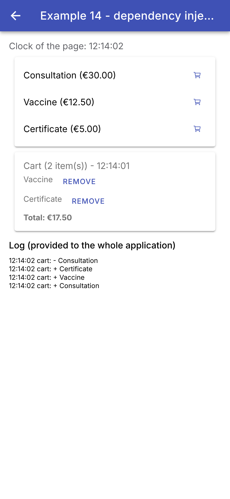
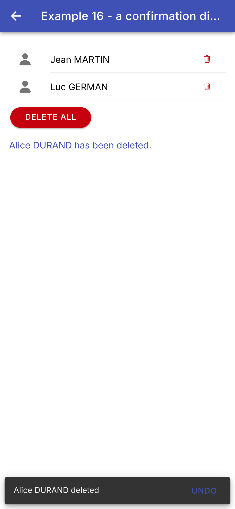

4. 组件
编写自己的组件是使用 [Angular] 和 [Ionic] 的核心：一个写得好的屏幕由小组件组成，每个组件都有自己的输入、模板、样式，必要时还有自己的状态。本章展示它们如何相互通信（输入和输出）、如何组装（内容渲染、模板）、如何运作（生命周期）、如何在无需来回传递的情况下共享数据（依赖注入），以及如何复用行为（指令）。这相当于 [Flutter] 课程中的“Widgets”一章：相同的示例、相同的屏幕，只是使用 [Angular] 的工具。
4.1. 示例 10：组件及其输入
4.1.1. 数据类型
父组件和子组件共用一个类型，存放在单独的文件中：
| // =========================================================================
// src/app/ex10-component-inputs/doctor.ts - 数据的类型
// -------------------------------------------------------------------------
// 父组件（Ex10Page）和子组件（DoctorCard）共用的类型。
// TypeScript 接口不产生任何代码：它只供编译器
// 使用，编译器会检查每个对象是否具有所有字段。
// readonly：我们从不修改医生；而是构建另一个医生。
// =========================================================================
export interface Doctor {
readonly id: number;
readonly title: string;
readonly firstName: string;
readonly lastName: string;
readonly specialty: string;
readonly available: boolean;
}
// 一个只有可用性发生变化的副本：...m 复制 m 的所有字段，
// 然后 available 替换其中的对应字段
export function withAvailability(m: Doctor, available: boolean): Doctor {
return { ...m, available };
}
|
- 第 10–17 行：一个 [TypeScript] 接口：医生的结构。它在运行时不生成任何代码；它只供编译器使用，编译器会验证每个对象都具有所有类型正确的字段。[readonly] 禁止在对象创建之后修改字段；
- 第 21–23 行：一个只有可用性发生变化的副本。[{ ...m, available }] 复制 [m] 的所有字段（展开运算符 [...]），然后字段 [available] 替换 [m] 中的对应字段：原始对象永远不会改变。
[Dart] 定义带有命名参数构造函数的类，而 [TypeScript] 只使用接口和对象字面量；[{ id: 1, title: 'Mme', ... }] 本身就已经有“命名参数”了。
4.1.2. 子组件
[DoctorCard] 组件在 [Ionic] 的卡片中显示一位医生。与课程的其余部分一样，它写在两个文件中：类（[doctor-card.ts]）和它的模板（[doctor-card.html]）。
| // =========================================================================
// src/app/ex10-component-inputs/doctor-card.ts - 子组件
// -------------------------------------------------------------------------
// 它通过由函数 input() 和 input.required() 声明的输入
// 从父组件接收数据。它们的类型在编译时检查
// （strictTemplates）：[doctor]="42" 会被拒绝。
// - input.required<T>()：父组件必须提供这个输入；
// - input(false) ：可选输入，带有默认值；
// - transform ：转换所接收值的函数
// （booleanAttribute、numberAttribute：Angular 提供的，使得
// compact 或 rank="1" 可以写成简单的 HTML 属性）。
// 输入是一个只读的信号：通过调用它来读取，
// doctor()，屏幕会随它的变化而变化。
//
// 黄金法则：组件绝不修改它的输入（编译器
// 无论如何都禁止这样做：input() 既没有 set 也没有 update）。数据
// 从父组件向下流向子组件；要请求更改，
// 子组件通过输出通知它的父组件（见示例 11）。
// =========================================================================
import { booleanAttribute, Component, computed, input, numberAttribute } from '@angular/core';
import { IonAvatar, IonCard, IonCardContent, IonLabel, IonText } from '@ionic/angular';
import { Doctor } from './doctor';
@Component({
selector: 'app-doctor-card',
imports: [IonCard, IonCardContent, IonAvatar, IonLabel, IonText],
templateUrl: './doctor-card.html',
// 卡片的“样式”：它只适用于此组件的模板。
// Angular 会给模板的标签添加它自己的属性，
// 并相应地重写选择器：其他任何组件都不会
// 受这些规则影响（样式封装）
styles: `
ion-card { margin: 6px 0; border: 2px solid transparent; border-radius: 12px; }
ion-card.available { border-color: #4caf50; }
ion-card-content { display: flex; align-items: center; gap: 12px; padding: 12px; }
ion-avatar {
width: 40px; height: 40px; display: flex; align-items: center; justify-content: center;
background: #087ea4; color: white; font-weight: bold;
}
h2 { margin: 0; font-size: 17px; color: var(--ion-text-color); }
`,
})
export class DoctorCard {
// 输入：必需的医生和序号，可选的紧凑显示
readonly doctor = input.required<Doctor>();
// numberAttribute：rank="1"（一个字符串）变成数字 1
readonly rank = input.required({ transform: numberAttribute });
// booleanAttribute：单独写属性（<app-doctor-card compact />）就是 true
readonly compact = input(false, { transform: booleanAttribute });
// 由输入计算得出的值：它随输入的变化而变化
readonly initials = computed(() => this.doctor().firstName[0] + this.doctor().lastName[0]);
}
|
- 第 26 行：选择器——组件的标签名。父组件将写 [<app-doctor-card ... />]；
- 第 27 行：模板所使用的 [Ionic] 组件。组件只认识它导入的东西；
- 第 33–42 行：卡片的“样式”。这些规则只适用于此组件的模板。[Angular] 会给模板的标签添加一个唯一的属性，并相应地重写选择器（样式封装）。因此规则 [ion-card { ... }] 不会影响应用中的任何其他卡片。这相当于 [Flutter] widget 的私有样式常量，或 [React] 的“CSS 模块”：组件的样式与它存放在一起，不会干扰任何其他东西；
- 第 35 行：[available] 类的绿色边框，模板会把它应用到可预约医生的卡片上；
- 第 37–40 行：首字母圆圈，使用卡片专用的蓝色；
- 第 46 行：第一个必需的输入：[input.required<Doctor>()]。父组件必须提供它；否则，编译器会拒绝该模板。它还必须提供一个 [Doctor]：[[doctor]="42"] 同样会被拒绝（项目选项 [strictTemplates]）；
- 第 48 行：第二个必需的输入，序号，带有转换：[numberAttribute]，这是 [Angular] 的一个函数，用于把收到的值转换为数字。这样，父组件既可以写 [rank="1"] （一个字符串，如同任何 HTML 属性），也可以写 [[rank]="i + 1"] （一个数字）；
- 第 50 行：一个可选的输入，带有默认值（[false]）和另一个转换：[booleanAttribute]。此时单独写属性 [<app-doctor-card compact />] 就等于 [true]，就像 HTML 按钮的属性 [disabled] 一样；
- 第 53 行：由输入计算得出的值。输入是一个只读的**信号**：通过调用它来读取（[this.doctor()]），并且每当父组件指定另一位医生时，[computed] 都会重新计算首字母。
| <!-- ======================================================================
doctor-card.html - the template of the DoctorCard component
It only reads the inputs of the component: doctor(), rank(), compact().
====================================================================== -->
<!-- [class.available]: the CSS class available (a green border)
is only set if the doctor is available -->
<ion-card [class.available]="doctor().available">
<ion-card-content>
<!-- 一个带首字母的彩色圆盘 -->
<ion-avatar>{{ initials() }}</ion-avatar>
<ion-label>
<h2>{{ rank() }}. {{ doctor().title }} {{ doctor().firstName }} {{ doctor().lastName }}</h2>
<!-- 专业只在非紧凑显示时才存在 -->
@if (!compact()) {
<ion-text color="medium">{{ doctor().specialty }}</ion-text>
}
</ion-label>
</ion-card-content>
</ion-card>
|
- 第 8 行：[[class.available]="..."] 在表达式为真时把 CSS 类 [available] 放到卡片上，否则移除它；
- 第 11 行：一个 [ion-avatar] （一个圆盘），里面是首字母；
- 第 13 行：医生的序号和姓名，从输入中读取；
- 第 15–17 行：专业仅在非紧凑模式下显示。
黄金法则：组件绝不修改它的输入。事实上，编译器禁止这样做：由 [input()] 创建的信号既没有 [set] 也没有 [update]。数据从父组件流向子组件；要请求更改，子组件通过输出通知它的父组件（示例 11）。当父组件更改其数据时，[Angular] 会把新值赋给其子组件的输入，屏幕也随之更新。
4.1.3. 父组件
| // =========================================================================
// src/app/ex10-component-inputs/ex10.page.ts - 父组件
// -------------------------------------------------------------------------
// 它导入 DoctorCard 组件，并根据需要使用任意多次，
// 就像任何 Ionic 组件一样：组件是一块
// 可复用的界面，有自己的输入、模板
// 和样式。编写自己的组件是使用 Angular 的核心：
// 一个写得好的屏幕由小组件组成。
// =========================================================================
import { Component, signal } from '@angular/core';
import {
IonBackButton, IonButton, IonButtons, IonContent, IonHeader, IonText, IonTitle, IonToggle, IonToolbar,
} from '@ionic/angular';
import { DoctorCard } from './doctor-card';
import { withAvailability, Doctor } from './doctor';
@Component({
selector: 'app-ex10',
// 我们像导入 Ionic 的组件一样导入 DoctorCard
imports: [
IonHeader, IonToolbar, IonButtons, IonBackButton, IonTitle, IonContent, IonToggle, IonButton, IonText,
DoctorCard,
],
templateUrl: './ex10.page.html',
})
export class Ex10Page {
// 父组件的状态：医生列表（它会被另一个列表
// 替换，而从不就地修改）以及紧凑显示
readonly doctors = signal<Doctor[]>([
{ id: 1, title: 'Mme', firstName: 'Marie', lastName: 'PELISSIER', specialty: 'general practitioner', available: true },
{ id: 2, title: 'Mr', firstName: 'Paul', lastName: 'TATOU', specialty: 'pediatrician', available: false },
{ id: 3, title: 'Melle', firstName: 'Sophie', lastName: 'DUPONT', specialty: 'general practitioner', available: true },
]);
readonly compact = signal(false);
// 父组件更改它自己的数据：一个由副本组成的新列表。
// Angular 会更新卡片的输入，卡片随之变化
toggleAvailability(): void {
this.doctors.update((list) => list.map((m) => withAvailability(m, !m.available)));
}
}
|
- 第 15 行：父组件导入组件 [DoctorCard]……
- 第 21–24 行：……并在它的 [imports] 中声明它，与 [Ionic] 中的组件完全相同：自定义组件的使用方式与框架组件一模一样；
- 第 30–35 行：父组件的状态：医生列表（一个信号，其值会被另一个列表替换，而从不就地修改）和紧凑显示；
- 第 39–41 行：父组件把它的数据替换为一个由医生副本组成的新列表。[Angular] 向卡片提供它们新的输入，卡片随之更新。
| <!-- ======================================================================
ex10.page.html - the template of the parent: it uses <app-doctor-card>
====================================================================== -->
<ion-header>
<ion-toolbar color="primary">
<ion-buttons slot="start">
<ion-back-button defaultHref="/" />
</ion-buttons>
<ion-title>Example 10 - components and their inputs</ion-title>
</ion-toolbar>
</ion-header>
<ion-content class="ion-padding">
<!-- justify="space-between"：标签在左侧，开关在右侧 -->
<ion-toggle justify="space-between" [checked]="compact()" (ionChange)="compact.set($event.detail.checked)">
compact display
</ion-toggle>
<ion-button fill="outline" (click)="toggleAvailability()">Toggle the availabilities</ion-button>
<!-- 每位医生一张卡片；每张卡片通过 [input]="expression" 接收它的输入 -->
@for (m of doctors(); track m.id; let i = $index) {
<app-doctor-card [doctor]="m" [rank]="i + 1" [compact]="compact()" />
}
<p><ion-text color="medium">The same card, in its compact version, by fixing the input:</ion-text></p>
<!-- rank="1" and compact: simple attributes, converted by the transformations
numberAttribute and booleanAttribute -->
<div style="width: 260px">
<app-doctor-card [doctor]="doctors()[0]" rank="1" compact />
</div>
</ion-content>
|
- 第 16–18 行：来自 [Ionic] 的开关（[ion-toggle]），相当于 [Flutter] 中的 [SwitchListTile]。[justify="space-between"] 把标签放在左侧，开关放在右侧；[(ionChange)] 是每次更改时触发的事件，而 [$event.detail.checked] 是它的新状态；
- 第 20 行：带边框的按钮（[fill="outline"]），对应于 [OutlinedButton]；
- 第 23–25 行：每位医生一张卡片。[track m.id] 告诉 [Angular] 如何在前后两次列表之间识别同一位医生（对应于 [ValueKey(m.id)] 在 [Flutter] 中的键）；[let i = $index] 指定元素的序号。每张卡片使用如下语法接收属于它自己的输入：[[input]="expression"]：表达式在父组件中求值，其值被传递给子组件的输入；
- 第 31 行：同一张卡片的紧凑版本，放在 260 像素宽的容器中。[rank="1"] 和 [compact] 被写成普通的 HTML 属性：子组件的转换函数 [numberAttribute] 和 [booleanAttribute] 会把它们转换为 [1] 和 [true]。
起初，以及在紧凑视图中，可用状态是相反的：
这是一个创建模板片段的方法，还是一个真正的组件？[Angular] 几乎没有给选择留下余地：可复用的界面片段就是组件。这是件好事：它有名称，其输入在编译时就有类型和验证，样式是封装的，并且可以在别处复用。[Flutter] 通过 widget 的构造函数参数传递数据，而 [Angular] 通过输入传递数据，这些输入是信号：子组件无需做任何事情就能跟踪其变化。
4.2. 示例 11：子组件通知其父组件
数据通过输入向下流动；信息通过输出向上回流：输出是子组件发出、由父组件监听的事件，就像监听按钮的 [(click)] 事件一样。
4.2.1. 来自子组件的“事件”
| // =========================================================================
// src/app/ex11-lifting-state-up/counter.ts
// -------------------------------------------------------------------------
// 一个通知其父组件的子组件：它用函数 output() 声明输出，
// 并在有事情发生时“发出”它们。
// 父组件在它的模板中订阅它们，就像订阅
// 按钮的 (click) 事件一样：
// <app-counter label="Coffees" [max]="3" (incremented)="..." (limit)="..." />
// - output<number>()：携带一个数字（$event）的事件；
// - output<void>() ：不带数据的事件。
// =========================================================================
import { Component, input, output, signal } from '@angular/core';
import { IonButton, IonChip } from '@ionic/angular';
@Component({
selector: 'app-counter',
imports: [IonButton, IonChip],
templateUrl: './counter.html',
styles: `
:host { display: flex; align-items: center; }
.label { width: 110px; }
`,
})
export class Counter {
// 输入（向下流动的内容）……
readonly label = input.required<string>();
readonly max = input.required<number>();
// ……以及输出（向上流动的内容）
readonly incremented = output<number>(); // 携带新值
readonly limit = output<void>(); // 不带数据
// 此计数器专有的状态：每个 Counter 都有自己的状态
readonly value = signal(0);
plus(): void {
if (this.value() >= this.max()) {
// emit()：通知所有监听该输出的对象
this.limit.emit();
return;
}
this.value.update((v) => v + 1);
// 我们通知父组件，并把新值传给它
this.incremented.emit(this.value());
}
}
|
- 第 20–23 行：组件的样式。[:host] 指组件自身的标签（[<app-counter>]），其子元素排成一行（[display: flex]）；
- 第 27–28 行：输入：从父组件向下流动的内容；
- 第 30–31 行：输出：向上回流到父组件的内容。[output<number>()] 声明一个携带数字的事件；[output<void>()] 声明一个不带数据的事件。它们对应于 [Flutter] 计数器的参数 [onIncrement] （一个 [ValueChanged<int>]）和 [onLimit] （一个 [VoidCallback]）：子组件不再从父组件接收函数，而是发出事件，由父组件订阅；
- 第 34 行：此计数器特有的状态；每个 [Counter] 都有自己的状态；
- 第 36–45 行：如果超过最大值，计数器会通知其父组件（[this.limit.emit()]）；否则，它先修改自己的状态，然后传递新值来通知父组件（[this.incremented.emit(...)]）。在第 44 行读取信号时，它已经有了新值。
| <!-- ======================================================================
counter.html - a label, a +1 button and the value of the counter
====================================================================== -->
<span class="label">{{ label() }}</span>
<ion-button fill="outline" (click)="plus()">+1</ion-button>
<ion-chip [outline]="true">{{ value() }} / {{ max() }}</ion-chip>
|
- 第 4–6 行：一个标签、一个按钮（[+1]）和一个芯片（[ion-chip]），用于显示当前值和最大值。
4.2.2. 受控组件
一个自定义表单字段（标签 + 字段 + 提示 + 字符计数器），作为受控字段工作：值属于父组件，父组件把它传给字段，并在每次按键时得到通知。[Angular] 为此提供了现成的函数 [model()]。
| // =========================================================================
// src/app/ex11-lifting-state-up/text-field.ts - 受控组件
// -------------------------------------------------------------------------
// 一个“自制的”表单字段（标签 + 字段 + 帮助 + 字符
// 计数器），像受控字段一样使用，采用
// 双向绑定：
// <app-text-field [(value)]="firstName" label="First name" [max]="20" />
// 值属于父组件（它的 firstName 信号）。model() 同时声明
// 一个输入（value）和一个输出（valueChange）：
// - 父组件把它的值传给字段：[value]="firstName()"；
// - 字段更改值：value.set(...)，这会发出 valueChange；
// - 语法 [(value)]="firstName"（“盒子里的香蕉”）同时写入
// 这两者：父组件的信号会随输入而变化。
// 当父组件自己更改值时（Clear 按钮），字段随之变化，
// 无需再写任何东西：输入就是信号。
//
// 错误消息（errorText）：Ionic 只有在字段带有
// ion-invalid 和 ion-touched 类时才会显示它，这两个类由它自己
// 从 Angular 表单控件的状态（ngModel，见示例 07 和 08）复制而来。
// 因此我们通过 ngModel，并设置其控件的错误。
// =========================================================================
import { Component, computed, effect, input, model, viewChild } from '@angular/core';
import { FormsModule, NgModel } from '@angular/forms';
import { IonInput } from '@ionic/angular';
@Component({
selector: 'app-text-field',
imports: [IonInput, FormsModule],
templateUrl: './text-field.html',
})
export class TextField {
// model.required：一个必需的输入……组件可以修改它
readonly value = model.required<string>();
readonly label = input.required<string>();
readonly max = input.required<number>();
readonly help = input('');
// 字段满了吗？
readonly full = computed(() => this.value().length === this.max());
// 模板的 ngModel，以及它所管理的表单控件
private readonly model = viewChild.required(NgModel);
constructor() {
// 一个 effect：每当 full() 变化时重新运行。当字段满了时，它把
// 控件声明为“touched”并“有错误”
effect(() => {
const control = this.model().control;
control.markAsTouched();
control.setErrors(this.full() ? { full: true } : null);
});
}
}
|
- 第 34 行：[model.required<string>()] 同时声明了一个输入（[value]）和一个输出（[valueChange]）。这是一个组件自身可以修改的信号：[this.value.set('...')] 会修改它的值，并且发出 [valueChange]，从而通知父组件。父组件会写 [[(value)]="firstName"] （“盒子里的香蕉”）：它的信号 [firstName] 被传给字段，并跟踪该输入；
- 第 35–37 行：其他输入：标签、最大长度，以及可选的帮助文本（默认为空）；
- 第 40 行：字段是否已满？由值和最大值计算得出；
- 第 43 行：[viewChild.required(NgModel)]：模板指令 [ngModel] （[Angular] 的表单控件，见示例 07 和 08），以信号的形式提供；
- 第 48–52 行：一个副作用（EFFECT）：每当它所监视的信号发生变化（此处为 [full()]）时就会重新执行的函数。它把控件标记为“已触碰”，并在字段已满时将其设为错误状态。为什么要经过表单校验？因为 [Ionic] 只有在字段带有 CSS 类 [ion-invalid] 和 [ion-touched] 时，才会显示 [ion-input] 的错误消息（[errorText]）；而使用 [Angular] 时，它会根据表单控件的状态自行生成这些类（即 [ng-invalid] 和 [ng-touched]）。手动设置它们毫无意义：[Ionic] 会在下一次按键时把它们移除。
| <!-- ======================================================================
text-field.html - an ion-input, driven by the parent's value
====================================================================== -->
<!-- [(ngModel)]="value": the two-way binding between the field and the
value signal (the model() of the component): each keystroke does value.set(...),
which emits valueChange to the parent; a new value from the parent
is displayed in the field.
[maxlength]: the field refuses the extra characters;
[counter]: it displays a counter ("5 / 20");
errorText replaces helperText (and the field turns red) when the control is in error -->
<ion-input
[(ngModel)]="value"
[label]="label()"
labelPlacement="floating"
[maxlength]="max()"
[counter]="true"
[helperText]="help()"
errorText="Maximum length reached"
/>
|
- 第 13 行：[[(ngModel)]="value"]：字段与信号 [value] 之间的双向绑定。[ngModel] 接受可编辑的信号：每次按键都会触发 [value.set(...)]，从而通知父组件；来自父组件的新值会显示在字段中；
- 第 14–15 行：标签，当字段有值或获得焦点时，它会“浮”到字段上方；
- 第 16 行：字段拒绝任何多余的字符；
- 第 17 行：显示一个计数器（“5 / 20”）；
- 第 18 行：字段下方的提示；
- 第 19 行：当控件处于错误状态（字段已满）时，用来替换提示并使字段变红的消息。
[Flutter] 的字段有一个独特的难题：[TextField] 把文本存放在控制器中，每当父组件自己修改值（通过“清除”按钮）时，都必须在 [didUpdateWidget] 中保持控制器同步。这里没有这类问题：父组件的值通过信号到达，而 [ngModel] 一旦它变化就会把它复制回字段中。
4.2.3. 父组件
| // =========================================================================
// src/app/ex11-lifting-state-up/ex11.page.ts - 父组件监听其子组件
// -------------------------------------------------------------------------
// 数据向下流动（输入）；信息通过子组件的
// 输出向上流动：
// 1. 子组件的“事件”：(incremented)、(limit)；
// 2. 受控组件：[(value)]，就像字段的 [(ngModel)] 一样。
// 状态仍然属于父组件，父组件可以自己修改它（Clear）。
// =========================================================================
import { Component, signal } from '@angular/core';
import {
IonBackButton, IonButton, IonButtons, IonCard, IonCardContent, IonCardHeader, IonCardSubtitle, IonContent,
IonHeader, IonTitle, IonToolbar,
} from '@ionic/angular';
import { TextField } from './text-field';
import { Counter } from './counter';
@Component({
selector: 'app-ex11',
imports: [
IonHeader, IonToolbar, IonButtons, IonBackButton, IonTitle, IonContent, IonCard, IonCardHeader,
IonCardSubtitle, IonCardContent, IonButton, Counter, TextField,
],
templateUrl: './ex11.page.html',
})
export class Ex11Page {
readonly total = signal(0);
readonly message = signal('');
readonly firstName = signal('Marie');
readonly lastName = signal('PELISSIER');
// 由计数器调用的方法：它接收计数器传来的值
onIncrement(label: string, value: number): void {
this.total.update((t) => t + 1);
this.message.set(`${label} is now ${value}`);
}
// 父组件更改它的数据：各字段随之变化
clear(): void {
this.firstName.set('');
this.lastName.set('');
}
}
|
- 第 30–31 行：两个字段的值属于父组件：两个信号；
- 第 34–37 行：计数器发出 [incremented] 时调用的方法：它接收计数器传递的值；
- 第 40–43 行：父组件自己修改值：清空这些字段。
| <!-- ======================================================================
ex11.page.html - the template of the parent: it listens to the children's outputs
====================================================================== -->
<ion-header>
<ion-toolbar color="primary">
<ion-buttons slot="start">
<ion-back-button defaultHref="/" />
</ion-buttons>
<ion-title>Example 11 - the child notifies its parent</ion-title>
</ion-toolbar>
</ion-header>
<ion-content class="ion-padding">
<ion-card>
<ion-card-header>
<ion-card-subtitle>1. Outputs listened to by the parent</ion-card-subtitle>
</ion-card-header>
<ion-card-content>
<!-- (output)="statement"：$event 是子组件发出的数据 -->
<app-counter
label="Coffees"
[max]="3"
(incremented)="onIncrement('Coffees', $event)"
(limit)="message.set('No more than 3 coffees!')"
/>
<app-counter
label="Glasses of water"
[max]="8"
(incremented)="onIncrement('Glasses of water', $event)"
(limit)="message.set('Enough drinking.')"
/>
<p><em>Total clicks: {{ total() }} - {{ message() }}</em></p>
</ion-card-content>
</ion-card>
<ion-card>
<ion-card-header>
<ion-card-subtitle>2. Controlled components</ion-card-subtitle>
</ion-card-header>
<ion-card-content>
<!-- [(value)]="firstName"：与父组件的信号的双向绑定 -->
<app-text-field [(value)]="firstName" label="First name" [max]="20" help="Required" />
<app-text-field [(value)]="lastName" label="Last name" [max]="20" help="Displayed in upper case" />
<!-- 父组件的数据，随输入而变化 -->
<p>Data of the parent: <strong>{{ firstName() }} {{ lastName().toUpperCase() }}</strong></p>
<ion-button fill="outline" (click)="clear()">Clear (from the parent)</ion-button>
</ion-card-content>
</ion-card>
</ion-content>
|
- 第 21–26 行：一个计数器、它的输入和它的输出。[(incremented)="onIncrement('Coffees', $event)"]：每次传递时，[Angular] 都会执行该语句，其中 [$event] 是子组件传递的数据；父组件再为它添加自己的参数（标签）。[(limit)] 直接执行一条语句：[message.set(...)]；
- 第 30 行：第二个计数器，其输出以同样的方式被监听，并带有它自己的标签（“Glasses of water”）；
- 第 43–44 行：两个受控字段，通过 [firstName] 和 [lastName] 与父组件的信号相连，借助 [[(value)]]。父组件传递的是信号本身（[firstName]，不带括号）：[Angular] 读取并修改它；
- 第 46 行：父组件的数据，跟随输入变化；
- 第 47 行：父组件自己修改值：清空这些字段。
点击第一个计数器四次（第四次时它会发出 [limit]），点击第二个计数器一次，并填写姓名；然后从父组件清空这些字段：
输入和输出——这就是 [Angular] 中父组件与其子组件之间的全部对话。[Flutter] 把函数作为参数传递（[onIncrement: (v) => ...]），就像 [React] 把函数作为“props”传递一样；[Angular] 更倾向于事件，监听事件所用的语法与浏览器中的事件相同（[(click)]、[(incremented)]）。而双向绑定 [[( )]]——[Flutter] 和 [React] 需要手动编写（一个值 + 一个函数 [onChanged]）——在这里则是一种模板语法。
4.3. 示例 12：组合
4.3.1. 卡片
组件的输入传递数据……内容本身则像 HTML 标签一样写在它的标签之间：[<app-card>...here...</app-card>]。组件使用标签 [<ng-content>]把它放在模板中它想要的任何位置：这就是内容投影。[Ionic] 到处都在使用它：[ion-button] 的文本、[ion-card] 的内容或 [ion-item] 的内容都是被投影的。这对应于 [child]、[title]或 [body] 这些参数，它们属于 [Flutter] 中接收其他 widget 的 widget。
| // =========================================================================
// src/app/ex12-composition/card.ts - 可复用的模板
// -------------------------------------------------------------------------
// 组件的输入传递数据……而内容
// 则写在它的标签之间，就像 HTML 标签一样，组件
// 用 <ng-content> 标签把它放在想放的位置：这就是内容
// 投影。Ionic 到处都在使用它：<ion-button> 的内容、
// <ion-card> 的内容、<ion-item> 的内容……
// - <ng-content />：“主”内容（所有不在别处的内容）；
// - <ng-content select="[header]">：另一个位置（一个“slot”），
// 用于带有 header 属性的父组件标签；写在
// <ng-content> 和 </ng-content> 之间的是默认内容；
// - 页脚是可选的：卡片在它的内容中查找页脚
// （contentChild），只有存在时才显示它。
// 卡片设定框架（边框、页眉、页脚），父组件提供
// 里面的内容。
// =========================================================================
import { Component, computed, contentChild, Directive, input } from '@angular/core';
// 一个标记：不含代码的指令，由父组件设置在它的页脚上
// （<span footer>...</span>），以便卡片能找到它
@Directive({ selector: '[footer]' })
export class CardFooter {}
@Component({
selector: 'app-card',
templateUrl: './card.html',
styles: `
:host { display: block; margin: 0 0 12px; border: 1px solid var(--bg); border-radius: 8px; overflow: hidden; }
.header { background: var(--bg); padding: 10px; font-weight: bold; }
.header.colored { color: white; }
.body { padding: 10px; }
.footer { background: #f5f5f5; padding: 8px; color: #757575; font-size: 12px; }
`,
// host：绑定在 <app-card> 标签本身上。这里是一个
// CSS 变量（--bg），由上面的规则读取
host: { '[style.--bg]': 'background()' },
})
export class Card {
// Ionic 颜色，可选（'primary'、'success'……）：默认为 undefined
readonly color = input<string>();
readonly background = computed(() => (this.color() ? `var(--ion-color-${this.color()})` : '#e0e0e0'));
// contentChild：内容中带有指令 CardFooter 的第一个元素；
// 一个信号，如果没有则为 undefined
readonly footer = contentChild(CardFooter);
}
|
- 第 23–24 行：一个标记（MARKER）——一个指令（没有模板的类；见示例 15）——它什么也不做。父组件把它放在自己的页脚 [<span footer>...</span>] 上，以便卡片可以在其内容中找到它；
- 第 29–35 行：卡片的样式。颜色来自 CSS 变量 [--bg]；
- 第 38 行：[host]：组件自身标签上的绑定（[<app-card>]）。这里，CSS 变量 [--bg] 被赋予计算值 [background()]；
- 第 42 行：一个没有默认值的可选输入：如果父组件不提供，则为 [undefined] 。与 [Ionic] 的组件一样，卡片接收主题中某种颜色的名称（[primary]、[success]……）；
- 第 43 行：背景颜色：与该颜色对应的 [Ionic] CSS 变量 （[var(--ion-color-primary)]……），或浅灰色；
- 第 47 行：[contentChild(CardFooter)] 在父组件提供的内容中搜索第一个带有指令 [CardFooter] 的元素。这是一个信号：如果没有找到，则为 [undefined] 。
| <!-- ======================================================================
card.html - the frame of the card, and three places for the content
====================================================================== -->
<!-- the header: the styles of .header (bold, white on a colour)
apply, by inheritance, to ALL the texts provided by the parent -->
<div class="header" [class.colored]="color()">
<ng-content select="[header]">Untitled</ng-content>
</div>
<!-- 主内容，由父组件提供 -->
<div class="body">
<ng-content />
</div>
<!-- 没有提供页脚：就完全没有页脚 -->
@if (footer()) {
<div class="footer">
<ng-content select="[footer]" />
</div>
}
|
- 第 7–9 行：页眉。[<ng-content select="[header]">] 是一个插槽：它接收与 CSS 选择器 [[header]] 匹配的内容标签，也就是带有属性 [header] 的标签。[<ng-content>] 与 [</ng-content>] 之间的文本（“Untitled”）是默认内容，在父组件没有提供页眉时显示。[.header] 的样式（粗体、彩色背景上的白色文字）通过继承应用于父组件提供的所有文本：这对应于 [DefaultTextStyle] 在 [Flutter] 中的作用；
- 第 12–14 行：主要内容：[<ng-content />] 不带选择器，接收所有没有进入其他位置的内容；
- 第 17–21 行：没有提供页脚：就完全没有页脚（既没有它的边距，也没有它的灰色背景）。
4.3.2. 通用表格
| // =========================================================================
// src/app/ex12-composition/data-table.ts - 泛型表格
// -------------------------------------------------------------------------
// DataTable<T> 是一个泛型组件：它显示任意类型 T 的
// 行。它知道如何遍历行，但不知道如何
// 显示单个单元格：由父组件来告诉它，方法是在内容中
// 为每一列传给它一个模板（<ng-template>）：
// <app-data-table [rows]="slots">
// <ng-template column="Slot" let-c>{{ c.time }}</ng-template>
// </app-data-table>
// <ng-template> 不会显示在它被写的地方：它是一块
// “待命”的模板，由表格自己按需
// 多次显示（ngTemplateOutlet），并给它提供数据（行
// 及其序号）：let-c 接收行，let-i="index" 接收其序号。
// 内容由父组件提供，但它使用属于
// 子组件的数据：这相当于 Flutter 的“builder”
// （ListView.builder）和 React 的“render props”。
// =========================================================================
import { NgTemplateOutlet } from '@angular/common';
import { Component, contentChildren, Directive, inject, input, TemplateRef } from '@angular/core';
// 单元格模板所接收的数据：$implicit 是
// let-c（不带名称）的值，index 是 let-i="index" 的值
export interface CellContext<T> {
$implicit: T;
index: number;
}
// 一列：设置在 <ng-template> 上的指令。它携带该列的标题，
// 并提供对它所设置的模板（TemplateRef）的访问
@Directive({ selector: 'ng-template[column]' })
export class Column {
readonly title = input.required<string>({ alias: 'column' });
readonly template = inject<TemplateRef<CellContext<unknown>>>(TemplateRef);
}
@Component({
selector: 'app-data-table',
imports: [NgTemplateOutlet],
templateUrl: './data-table.html',
styles: `
table { width: 100%; border-collapse: collapse; }
th { text-align: left; padding: 6px; border-bottom: 1px solid #ccc; }
td { padding: 6px; border-top: 1px solid #e0e0e0; }
tbody tr:first-child td { border-top: none; }
.empty { color: #9e9e9e; padding: 6px; }
`,
})
export class DataTable<T> {
// T 由 [rows] 的类型推断得出：DataTable<Slot>……
readonly rows = input.required<readonly T[]>();
// contentChildren：内容中的所有列，按顺序排列（一个信号）
readonly columns = contentChildren(Column);
}
|
- 第 25–28 行：单元格模板从表格接收的数据：行（[$implicit]，默认值）及其列（[index]）；
- 第 32–36 行：一个列（COLUMN）——一个只能应用于 [<ng-template>] 的指令（其选择器为 [ng-template[column]]）。[<ng-template>] 不会在它被书写的位置显示：它是一个“待定”的模板片段——一个模板（TEMPLATE）——由别的组件按需显示任意多次。该指令携带列标题（输入 [title]，它通过别名取得指令的名称：[column="Slot"]），并提供对它所在模板的访问（[inject(TemplateRef)]）；
- 第 50 行：[DataTable<T>] 是一个泛型组件：它可以显示任意 [T] 类型的行。它知道如何遍历各行，却不知道如何显示单元格——父组件通过为每一列传入一个模板来告诉它方法。这就是 [Flutter] 中“builder”（[ListView.builder]，以及 [cells] 函数，来自 [Flutter] 示例）和 [React] 中“render props”的原理：内容由父组件提供，但它使用的是属于子组件的数据（行、行的序号）；
- 第 52 行：各行。[T] 由父组件所提供值的类型推断得出：对于 [[rows]="slots"]，它是 [DataTable<Slot>]；
- 第 54 行：[contentChildren(Column)]：内容中的所有列，按父组件书写的顺序排列（一个包含数组的信号）。
| <!-- ======================================================================
data-table.html - a row of titles, then one row per element
====================================================================== -->
<table>
<thead>
<tr>
@for (col of columns(); track col) {
<th>{{ col.title() }}</th>
}
</tr>
</thead>
<tbody>
@for (row of rows(); track $index; let i = $index) {
<tr>
@for (col of columns(); track col) {
<!-- the cell of THIS row and of this column, built by the
parent's template, with its data (context) -->
<td>
<ng-container *ngTemplateOutlet="col.template; context: { $implicit: row, index: i }" />
</td>
}
</tr>
}
</tbody>
</table>
<!-- 没有行：显示父组件提供的 [empty] 内容，或者一段默认文本 -->
@if (rows().length === 0) {
<div class="empty">
<ng-content select="[empty]">No data.</ng-content>
</div>
}
|
- 第 6–10 行：一行表头，每列一个；
- 第 13–23 行：每个元素一行表格行，每一行中每列一个单元格；
- 第 19 行：[*ngTemplateOutlet] 在此处显示列模板（[col.template]），并向它提供其数据（[context]）：行及其序号。[<ng-container>] 是一个不会出现在页面上的标签：它仅用来承载指令；
- 第 27–31 行：没有行——显示父组件提供的 [[empty]] 内容，或默认文本。列标题仍然显示。
表格本身围绕这些模板创建单元格（[<td>]）：因此它们的样式（边距、边框）是表格的样式，父元素只需提供其中的内容。
4.3.3. 父组件
| // =========================================================================
// src/app/ex12-composition/ex12.page.ts - 使用 Card 和 DataTable 模板
// =========================================================================
import { Component } from '@angular/core';
import {
IonBackButton, IonButtons, IonChip, IonContent, IonHeader, IonIcon, IonTitle, IonToolbar,
} from '@ionic/angular';
import { addIcons } from 'ionicons';
import { calendar } from 'ionicons/icons';
import { Card, CardFooter } from './card';
import { Column, DataTable } from './data-table';
// 一个时间段：内联书写的类型（无需在别处命名一个接口）
type Slot = { id: number; time: string; patient: string | null };
const slots: Slot[] = [
{ id: 1, time: '8:00 - 8:20', patient: null },
{ id: 2, time: '8:20 - 8:40', patient: 'Mme Alice DURAND' },
{ id: 3, time: '8:40 - 9:00', patient: null },
];
@Component({
selector: 'app-ex12',
imports: [
IonHeader, IonToolbar, IonButtons, IonBackButton, IonTitle, IonContent, IonIcon, IonChip,
Card, CardFooter, DataTable, Column,
],
templateUrl: './ex12.page.html',
})
export class Ex12Page {
readonly slots = slots;
readonly free = slots.filter((c) => c.patient === null).length;
// 一个空列表，类型显式给出（没有任何东西可供推断）
readonly persons: { id: number; name: string }[] = [];
constructor() {
addIcons({ calendar });
}
}
|
- 第 15 行：一个时间段——内联类型。[string | null]：一位患者，或者无人；
- 第 27 行：父组件导入组件 [Card] 和 [DataTable]，以及指令 [CardFooter] 和 [Column]，并在其模板中使用它们；
- 第 33 行：可用时间段的数量；
- 第 35 行：一个空列表，其类型被显式指定（否则无法推断）。
| <!-- ======================================================================
ex12.page.html - cards, and what we put inside them
====================================================================== -->
<ion-header>
<ion-toolbar color="primary">
<ion-buttons slot="start">
<ion-back-button defaultHref="/" />
</ion-buttons>
<ion-title>Example 12 - composition</ion-title>
</ion-toolbar>
</ion-header>
<ion-content class="ion-padding">
<!-- the header (header attribute) and the footer (footer attribute) go into their
places; the rest is the main content -->
<app-card color="primary">
<div header style="display: flex; align-items: center; gap: 8px">
<ion-icon name="calendar" />
<span>Schedule of Mme PELISSIER</span>
</div>
<span footer>{{ free }} free slot(s)</span>
<!-- 主内容：一个时间段表格，每列一个模板 -->
<app-data-table [rows]="slots">
<!-- let-i="index"：行的序号 -->
<ng-template column="#" let-i="index">{{ i + 1 }}</ng-template>
<!-- let-c：行本身 -->
<ng-template column="Slot" let-c>{{ c.time }}</ng-template>
<ng-template column="Status" let-c>
@if (c.patient) {
<ion-chip [outline]="true">{{ c.patient }}</ion-chip>
} @else {
<ion-chip color="success">Free</ion-chip>
}
</ng-template>
</app-data-table>
</app-card>
<app-card color="success">
<span header>A card without a footer</span>
The footer is not provided: the card does not display it.
</app-card>
<!-- 没有提供页眉：使用默认内容“Untitled” -->
<app-card>
<app-data-table [rows]="persons">
<ng-template column="Name" let-p>{{ p.name }}</ng-template>
<span empty>Nobody for now.</span>
</app-data-table>
</app-card>
</ion-content>
|
- 第 17–37 行：一张颜色为 [primary] 的卡片；
- 第 18–21 行：它的页眉：一个带有属性 [header] 的标签，因此它进入卡片的 [select="[header]"] 插槽；它包含一个图标和文本；
- 第 22 行：它的页脚，带有属性 [footer] （因此也带有指令 [CardFooter]）；
- 第 24–36 行：主要内容：一个时间段表格，每列一个模板。[let-c] 声明一个模板变量，它被赋予上下文中的 [$implicit] 值（即行）；[let-i="index"] 是一个接收 [index] 值（序号）的变量。“Status”列的模板包含一个 [@if] 和 [Ionic] 的组件（[ion-chip]）：模板就和任何其他模板一样；
- 第 39–42 行：没有页脚的卡片；
- 第 45–50 行：没有页眉的卡片（默认内容“Untitled”）；它的表格为空，并显示父组件提供的 [empty] 内容。
这里的模板变量（[c]、[p]）的类型为 [any]：[Angular] 不会把 [<ng-template>] 的类型与将显示它的表格中的 [T] 关联起来（我们可以通过在指令中编写 [ngTemplateContextGuard] 方法来帮助它做到这一点，就像 [NgFor] 所做的那样；这超出了本示例的范围）。

卡片定义框架（边框、页眉、页脚）；父组件提供其中的内容。[Ionic] 自身的组件就是这样构建的：[ion-card] 接收其页眉和内容，而 [ion-item] 接收放在开头（[slot="start"]）或结尾（[slot="end"]）的元素。[Flutter] 通过 widget 的参数传递内容，而 [Angular] 把内容写在组件的标签之间；当内容依赖于子组件的数据时，[Flutter] 传递一个函数，而 [Angular] 传递一个模板（[<ng-template>]）。
4.4. 示例 13：组件的生命周期
4.4.1. 时钟
| // =========================================================================
// src/app/ex13-lifecycle/clock.ts - 一个会启动和停止的组件
// -------------------------------------------------------------------------
// Angular 组件的生命周期：
// 1. constructor() ：对象被创建；它的输入还没有
// 值；
// 2. ngOnChanges(changes) ：它的输入刚刚收到值
// （第一次），之后每当
// 父组件给它们新值时再次触发；
// 3. ngOnInit() ：只执行一次，在第一次 ngOnChanges 之后。
// 组件即将出现：我们在这里启动
// 必须启动的东西；
// 4. afterNextRender(...) ：在它第一次渲染之后（它的标签
// 已存在于页面中）；
// 5. ngOnDestroy() ：组件永远消失。我们在这里
// 停止已经启动的东西。
// 时钟在出现时启动一个定时器（setInterval）……并且
// 必须在它消失时务必停止它：否则定时器
// 会在一个已死的组件上白白地继续运行。
// =========================================================================
import { afterNextRender, Component, input, OnChanges, OnDestroy, OnInit, output, signal, SimpleChanges }
from '@angular/core';
// “12:05:09”：当前时间
export function currentTime(): string {
return new Date().toLocaleTimeString('en-GB');
}
@Component({
selector: 'app-clock',
templateUrl: './clock.html',
styles: `.time { font-size: 40px; font-family: 'Roboto Mono', monospace; }`,
})
export class Clock implements OnChanges, OnInit, OnDestroy {
// Ionic 颜色：'primary'、'danger'……
readonly color = input('primary');
// 时钟把它生命中的每个阶段通知父组件
readonly log = output<string>();
readonly time = signal(currentTime());
// 定时器的标识符，以便能够停止它
private timer?: ReturnType<typeof setInterval>;
constructor() {
// afterNextRender：一个只执行一次的函数，在下一次
// 渲染之后执行。它在构造函数中注册（需要“注入
// 上下文”，见示例 14）
afterNextRender(() => this.log.emit('Clock: afterNextRender - displayed'));
}
// changes：发生变化的输入，带有它们的旧值和新值
ngOnChanges(changes: SimpleChanges<Clock>): void {
const color = changes.color;
// firstChange：第一个值，在创建时收到；我们只
// 记录之后的变化
if (color && !color.firstChange) {
this.log.emit(`Clock: ngOnChanges - ${color.previousValue} -> ${color.currentValue}`);
}
}
ngOnInit(): void {
this.log.emit('Clock: ngOnInit - starting the timer');
// 每秒钟，时间都会变化：屏幕随信号而变化
this.timer = setInterval(() => this.time.set(currentTime()), 1000);
}
ngOnDestroy(): void {
clearInterval(this.timer); // 清理
this.log.emit('Clock: ngOnDestroy - timer stopped');
}
}
|
[Angular] 组件的生命周期：
方法 | 何时？ |
constructor() | 对象刚刚创建；它的输入还没有值。在这里，我们调用 inject()、effect()、afterNextRender() 等。 |
ngOnChanges(changes) | 它的输入刚刚收到值（第一次），之后每当父组件为它们赋予新值时都会触发 |
ngOnInit() | 仅一次，紧接在第一次 ngOnChanges 之后：组件即将出现。在这里，我们启动一切需要启动的东西（定时器、订阅等） |
afterNextRender(...) | 在下一次渲染之后：组件的标签已经存在于页面上 |
ngOnDestroy() | 组件永久消失。在这里停止所有在此前启动的东西 |
- 第 26–28 行：当前时间，采用 [en-GB] 的 24 小时制格式（“12:05:09”）；
- 第 35 行：[implements OnChanges, OnInit, OnDestroy]：[Angular] 的接口，它们要求类实现相应的方法（编译器会检查方法的名称和参数）。[Angular] 只要找到这些方法就会调用，无论是否声明了接口；
- 第 37 行：时钟的颜色：来自 [Ionic] 的颜色；
- 第 39 行：时钟通过输出（示例 11）把生命周期的每个阶段通知给它的父组件；
- 第 41–43 行：状态：显示的时间和定时器的标识符，以便能够停止它；
- 第 49 行：[afterNextRender] 注册一个函数，在下一次显示之后执行一次。它在构造函数中调用，因为它需要“注入上下文”（示例 14）。它不会在构造函数内部直接发出结果：因为此时父组件还没有订阅它；
- 第 53–60 行：[ngOnChanges] 接收发生变化的输入，每个输入都带有其旧值（[previousValue]）、新值（[currentValue]）以及 [firstChange]，对于创建时收到的第一个值，它为 true。只记录后续的变化：父组件更改了颜色。这对应于 [didUpdateWidget] 在 [Flutter] 中的作用；
- 第 62–66 行：[ngOnInit]：启动一个周期性定时器（[setInterval]）；它的函数每秒被调用一次并更新时间。这对应于 [initState]；
- 第 68–71 行：清理：停止定时器（[clearInterval]）。否则，它会在已销毁的组件上继续无谓地运行，并使其一直留在内存中（内存泄漏）。这对应于 [dispose]。
| <!-- ======================================================================
clock.html - the time, in large, in the requested colour
====================================================================== -->
<div class="time" [style.color]="'var(--ion-color-' + color() + ')'">{{ time() }}</div>
|
- 第 4 行：时间，以醒目的方式显示；它的颜色由与所接收名称对应的 [Ionic] CSS 变量 决定（[var(--ion-color-danger)]……）。
有了信号，你往往可以不用 [ngOnChanges]：输入是一个信号，会被 [computed] 或 [effect] 自动跟踪（示例 11）。[ngOnChanges] 在像这里这样需要获取旧值时仍然有用。
4.4.2. 父组件
| // =========================================================================
// src/app/ex13-lifecycle/ex13.page.ts - 生命周期
// -------------------------------------------------------------------------
// - @if (withClock()) { <app-clock ... /> }：勾选/取消勾选复选框
// 会使组件出现/消失（ngOnInit，然后是 ngOnDestroy，
// 见 clock.ts）；更改它的颜色会改变它的输入（ngOnChanges）；
// - 一个在出现时就获得焦点的搜索字段
// （afterNextRender）；
// - 浏览器选项卡的标题随输入而变化（一个 effect，即 effect()）；
// - Ionic 的页面事件（ionViewDidEnter、ionViewWillLeave……）：
// 页面变得可见或不再可见，而不会被销毁；
// - 应用的生命周期：在手机上，它进入后台
// （打开另一个应用、屏幕熄灭），然后再回来。
// =========================================================================
import {
afterNextRender, Component, DestroyRef, effect, inject, Injector, signal, viewChild,
} from '@angular/core';
import { Title } from '@angular/platform-browser';
import {
IonBackButton, IonButton, IonButtons, IonCard, IonCardContent, IonCheckbox, IonContent, IonHeader, IonInput,
IonTitle, IonToolbar, ViewDidEnter, ViewWillLeave,
} from '@ionic/angular';
import { currentTime, Clock } from './clock';
@Component({
selector: 'app-ex13',
imports: [
IonHeader, IonToolbar, IonButtons, IonBackButton, IonTitle, IonContent, IonCard, IonCardContent, IonCheckbox,
IonButton, IonInput, Clock,
],
templateUrl: './ex13.page.html',
})
export class Ex13Page implements ViewDidEnter, ViewWillLeave {
readonly withClock = signal(true);
readonly red = signal(false);
readonly log = signal<string[]>([]);
readonly search = signal('');
readonly showSearch = signal(false);
// 搜索字段：一个信号，在字段不存在时为 undefined
private readonly field = viewChild(IonInput);
private readonly injector = inject(Injector);
constructor() {
// Angular 的 Title 服务：HTML 页面的标题（浏览器
// 标签页）。一个副作用（EFFECT）：每当它读取的
// 信号（search）发生变化，该函数就会重新执行
const title = inject(Title);
const initialTitle = title.getTitle();
effect(() => title.setTitle(this.search() === '' ? 'Example 13' : `Search: ${this.search()}`));
// 应用程序进入后台（hidden）或返回前台（visible）
const onVisibility = () => this.trace(`Application: ${document.visibilityState}`);
document.addEventListener('visibilitychange', onVisibility);
// DestroyRef：编写 ngOnDestroy 的另一种方式，在这里我们启动
// 某些东西。清理代码就写在启动代码旁边
inject(DestroyRef).onDestroy(() => {
document.removeEventListener('visibilitychange', onVisibility);
title.setTitle(initialTitle);
});
}
trace(message: string): void {
this.log.update((j) => [...j, `${currentTime()} ${message}`]);
}
// Ionic 的页面事件：页面已进入屏幕……
ionViewDidEnter(): void {
this.trace('Page: ionViewDidEnter');
}
// ……或即将离开屏幕（另一个页面出现在它前面，或者我们返回）
ionViewWillLeave(): void {
this.trace('Page: ionViewWillLeave');
}
openSearch(): void {
this.showSearch.set(true);
// 字段要到下一次渲染之后才会存在：我们在那时让它获得
// 焦点（手机键盘随之打开）。在构造函数
// 之外，afterNextRender 需要组件的注入器。
// getInputElement()：<ion-input> 所包含的 <input> 标签，在
// Ionic 构建它之后（一个 promise）
afterNextRender(async () => (await this.field()?.getInputElement())?.focus(), { injector: this.injector });
}
}
|
- 第 34 行：页面实现了 [Ionic] 的两个接口：[ViewDidEnter] 和 [ViewWillLeave] （见下文）；
- 第 42 行：[viewChild(IonInput)]：模板的搜索字段，以信号的形式提供，在字段不存在时为 [undefined]；
- 第 43 行：组件注入器（示例 14），[afterNextRender] 在第 85 行会需要它；
- 第 49–51 行：[Title] 服务来自 [Angular] ，用于修改 HTML 页面的标题（显示在浏览器标签页中的那个）。一个副作用（EFFECT）（[effect]）：每当它读取的某个信号发生变化，该函数就会重新执行；因此标题会随着文本的输入而更新。这对应于 [Title] widget 在 [Flutter] 中的作用；
- 第 54–55 行：应用程序自身的生命周期。在手机上，应用会进入后台（当打开另一个应用或屏幕关闭时），然后再返回：文档中的 [visibilitychange] 事件会发出这一信号（此时 [document.visibilityState] 等于 [hidden] 或 [visible]）。你可以响应它来保存草稿或停止定时器。这对应于 [AppLifecycleListener] 在 [Flutter] 中的作用；[Capacitor] 应用也有 [@capacitor/app] 插件用于此目的；
- 第 58–61 行：[DestroyRef]：编写 [ngOnDestroy] 的另一种方式。[onDestroy(...)] 注册一个在组件被销毁时调用的函数；清理代码因此就写在它所清理的内容旁边：移除监听器，并恢复页面的标题；
- 第 69–76 行：[Ionic] 页面（PAGE）事件，在 [Flutter] 中没有对应物。从一个页面切换到另一个页面时，[Ionic] 会把前一个页面隐藏并保留在内存中而不销毁它（这样返回时无需重新创建）：因此 [ngOnInit] 和 [ngOnDestroy] 并不能表明页面何时变为可见或不再可见。这些职责由 [ionViewWillEnter] 和 [ionViewDidEnter] （页面即将出现在屏幕上 / 已经出现在屏幕上）以及 [ionViewWillLeave] 和 [ionViewDidLeave] （页面即将离开屏幕 / 已经离开屏幕）承担。例如，返回页面时就在这里重新加载页面数据；
- 第 78–86 行：搜索字段要到下一次页面加载之后才会存在；此时使用 [afterNextRender] （对应于 [addPostFrameCallback]）让它获得焦点。在构造函数之外，[afterNextRender] 要求向它提供组件的注入器。[getInputElement()] （在 promise 中）返回组件 [<input>] 中包含的标签 [ion-input]，前提是 [Ionic] 已经创建了它；我们让它获得焦点，手机的键盘随即打开。
| <!-- ======================================================================
ex13.page.html - a clock that we make appear and disappear
====================================================================== -->
<ion-header>
<ion-toolbar color="primary">
<ion-buttons slot="start">
<ion-back-button defaultHref="/" />
</ion-buttons>
<ion-title>Example 13 - the lifecycle</ion-title>
</ion-toolbar>
</ion-header>
<ion-content class="ion-padding">
<ion-card>
<ion-card-content>
<ion-checkbox labelPlacement="end" [checked]="withClock()" (ionChange)="withClock.set($event.detail.checked)">
show the clock
</ion-checkbox>
<br />
<ion-checkbox labelPlacement="end" [checked]="red()" (ionChange)="red.set($event.detail.checked)">
in red
</ion-checkbox>
<!-- 只有勾选了复选框，组件才会存在 -->
@if (withClock()) {
<app-clock [color]="red() ? 'danger' : 'primary'" (log)="trace($event)" />
}
</ion-card-content>
</ion-card>
<ion-card>
<ion-card-content>
@if (!showSearch()) {
<ion-button fill="outline" (click)="openSearch()">Search...</ion-button>
} @else {
<ion-input
placeholder="the title follows the typing"
[value]="search()"
(ionInput)="search.set($event.detail.value ?? '')"
/>
}
</ion-card-content>
</ion-card>
<h6>Log</h6>
@for (line of log(); track $index) {
<div style="font-size: 12px">{{ $index + 1 }}. {{ line }}</div>
}
</ion-content>
|
- 第 17–23 行：来自 [Ionic] 的两个复选框（[ion-checkbox]），标签位于复选框之后（[labelPlacement="end"]）；
- 第 25–27 行：勾选复选框会显示时钟（[ngOnInit]）；取消勾选则隐藏它（[ngOnDestroy]）：[@if] 确实会创建并销毁组件。更改它的颜色会更改它的输入（[ngOnChanges]）；
- 第 33–41 行：一个只有在点击“Search…”之后才会出现的字段；
- 第 46–48 行：日志。
我们更改颜色，移除并恢复时钟，打开搜索，并输入一个姓名：

日志显示了时钟的活动：启动和初次显示、颜色变化、关闭和重新启动；而在这之间，还有页面出现在屏幕上（[ionViewDidEnter]）。字段自己获得了焦点：我们无需触碰它就在键盘上输入了姓名，并且浏览器标签页的标题随着输入而更新（“Search: Pelissier”，截图中看不到）。
对于 [Flutter] 而言，映射关系是直接的：[initState] 变为 [ngOnInit] （对于不依赖输入的元素，则是构造函数），[didUpdateWidget] 变为 [ngOnChanges] （对于某个输入，则是 [effect] ），[dispose] 变为 [ngOnDestroy] （或 [DestroyRef.onDestroy]），[addPostFrameCallback] 变为 [afterNextRender]。学过 [React] 课程的读者会认出 [effect] 和 [DestroyRef] 正是 [useEffect] 的两半：副作用及其清理函数。
4.5. 示例 14：依赖注入
如何在相距较远的组件之间共享数据和函数，而不必让它们逐级通过所有中间组件的输入传递？[Flutter] 通过继承数据（[InheritedWidget]）来解决，[React] 通过上下文来解决；[Angular] 使用的是服务和依赖注入。这正是 [Angular] 和 [Ionic] 自身所使用的机制：[Router]、[HttpClient]、[Title]、[AlertController]……都是通过 [inject(...)] 请求的服务。
原理：
- 服务是一个普通的类，用 [@Injectable] 标记；
- 提供者（PROVIDER）告诉 [Angular] 如何创建它的实例。它在应用程序的根部或由某个组件声明；
- 组件（或另一个服务）通过 [inject(Class)] 请求该对象：[Angular] 先在组件自身中查找提供者，然后在其父组件中，再在父组件的父组件中……一直到根，并返回最近的提供者所提供的对象。每个提供者只创建一次它的对象：请求它的各方共享同一个对象。
4.5.1. 整个应用程序共用一个数据实例
| // =========================================================================
// src/app/ex14-injection/providers/log.ts - 整个（WHOLE）应用程序共用的一份数据
// -------------------------------------------------------------------------
// 如何在相距较远的组件之间共享数据和函数，而不必让它们
// 逐级通过所有中间组件的输入传递？
// 借助服务（SERVICE）和 Angular 的依赖注入（DEPENDENCY INJECTION）：
// 1. 服务是一个普通的类，用 @Injectable 标记；
// 2. 提供者（PROVIDER）告诉 Angular 如何构建它的对象；
// 3. 任何组件都通过 inject(Log) 请求它：Angular
// 会给它位于上方最近（NEAREST）的提供者的对象。
// providedIn: 'root'：该提供者位于
// 应用程序的根部。只有一个（ONE）日志，由所有人共享（“单例”），
// 在第一次被请求时创建。
// 这是 Angular 和 Ionic 自身所使用的机制：Router、
// HttpClient、AlertController……都是我们注入的服务。
//
// 服务的数据是信号（SIGNALS）：在模板中读取它们的组件
// 会在数据变化时更新。
// =========================================================================
import { Injectable, signal } from '@angular/core';
import { currentTime } from './clock';
@Injectable({ providedIn: 'root' })
export class Log {
// 私有且可修改；公开部分只有只读视图
private readonly _lines = signal<string[]>([]);
readonly lines = this._lines.asReadonly();
trace(message: string): void {
// 最新的一行在最前；最多六行
this._lines.update((l) => [`${currentTime()} ${message}`, ...l].slice(0, 6));
}
}
|
- 第 24 行：[providedIn: 'root']：日志的提供者位于应用程序的根部。只有一个日志，由所有人共享（“单例”），在第一次被请求时创建；
- 第 27–28 行：服务的数据是信号：在模板中读取它们的组件会在数据变化时更新（对应于 [ChangeNotifier] 和 [notifyListeners()] 在 [Flutter] 中的作用）。可编辑的信号是私有的；公开部分只能得到它的只读视图（[asReadonly()]）：只有服务才能通过自己的方法修改日志；
- 第 30–33 行：修改日志的唯一方式是在顶部添加新的一行，最多保留六行。
4.5.2. 由组件提供的数据
| // =========================================================================
// src/app/ex14-injection/providers/cart.ts - 由一个（ONE）组件提供的一份数据
// -------------------------------------------------------------------------
// 这个服务没有 providedIn：没有人提供它……除了在其 providers 中
// 声明它的组件：
// @Component({ ..., providers: [Cart] })
// 于是该组件得到了它自己（ITS）的购物车，它和它的所有
// 后代（其模板中的组件，以及这些组件模板中的组件……）都能看到它，
// 而且只有它们能看到。提供它的两个组件拥有两个相互独立的
// 购物车。购物车随其组件一起创建，也随其组件一起销毁
// （服务的 ngOnDestroy）。
// 服务本身可以注入其他服务：这里是日志。
// =========================================================================
import { computed, inject, Injectable, OnDestroy, signal } from '@angular/core';
import { Log } from './log';
export interface Item {
label: string;
price: number;
}
@Injectable()
export class Cart implements OnDestroy {
private readonly log = inject(Log);
private readonly _items = signal<Item[]>([]);
readonly items = this._items.asReadonly();
// 一个计算值：reduce 把列表“折叠”成单个值
readonly total = computed(() => this._items().reduce((sum, a) => sum + a.price, 0));
add(item: Item): void {
this._items.update((a) => [...a, item]);
this.log.trace(`cart: + ${item.label}`);
}
remove(index: number): void {
this.log.trace(`cart: - ${this._items()[index].label}`);
this._items.update((a) => a.filter((_, i) => i !== index));
}
// 由组件提供的服务随该组件一起销毁
ngOnDestroy(): void {
this.log.trace('cart: destroyed');
}
}
|
- 第 23 行：[@Injectable()]，没有 [providedIn]：没有人提供购物车……除了在其 [providers] 中声明它的组件（见 [ex14.page.ts]）。于是该组件得到了它自己的购物车，它和它的所有后代（其模板中的组件、这些组件模板中的组件……）都能看到这个购物车——而且只有它们能看到。提供它的两个组件拥有两个相互独立的购物车：这正是放在树中的 [InheritedWidget] 的行为方式；
- 第 25 行：服务本身可以注入其他服务：购物车会把每次添加和每次移除都记录到日志中；
- 第 29 行：总价，一个计算值。[reduce] 把列表“折叠”成单个值：价格之和；
- 第 31–39 行：对购物车的修改，每次都会生成一个新列表；
- 第 42–44 行：由组件提供的服务随组件一起创建，也随组件一起结束：[Angular] 此时会调用它的 [ngOnDestroy]。当你之后返回该页面时，会在日志中看到“cart: destroyed”这一行，而日志属于整个应用程序。
4.5.3. 已配置的提供者
| // =========================================================================
// src/app/ex14-injection/providers/clock.ts - 一个带参数（PARAMETERIZED）的提供者
// -------------------------------------------------------------------------
// 一个时钟，其刷新周期是提供者的
// 一个参数：
// @Component({ ..., providers: [provideClock(5000)] })
// 该参数本身是一个被注入的值，由一个令牌（TOKEN）
// （InjectionToken）指定：提供者 { provide: PERIOD, useValue: 5000 }
// 给它赋值。provideClock(period) 返回两个
// 提供者：周期的提供者和时钟的提供者。
// 两个组件各自提供一个时钟：后代会得到
// 位于它上方最近（NEAREST）的那个。
// 当其组件消失时，时钟停止（ngOnDestroy）。
// =========================================================================
import { inject, Injectable, InjectionToken, OnDestroy, Provider, Signal, signal } from '@angular/core';
// “12:05:09”：一个日期的时间
export function currentTime(d = new Date()): string {
return d.toLocaleTimeString('en-GB');
}
// 一个令牌：它指代并非类的值（这里是一个数字）。
// factory：默认值，在没有人提供时使用
export const CLOCK_PERIOD = new InjectionToken<number>('period of the clock (ms)', {
factory: () => 1000,
});
@Injectable()
export class Clock implements OnDestroy {
private readonly period = inject(CLOCK_PERIOD);
private readonly _now = signal(new Date());
readonly now = this._now.asReadonly();
private readonly timer = setInterval(() => this._now.set(new Date()), this.period);
ngOnDestroy(): void {
clearInterval(this.timer);
}
}
// 带参数的提供者：一个返回提供者的函数
export function provideClock(period = 1000): Provider[] {
return [{ provide: CLOCK_PERIOD, useValue: period }, Clock];
}
// 带默认值的读取：对于其上方没有人提供时钟的
// 组件，使用一个固定的日期。
// optional: true：inject 返回 null，而不是抛出错误
export function injectNow(): Signal<Date> {
return inject(Clock, { optional: true })?.now ?? signal(new Date(2026, 0, 1)).asReadonly();
}
|
- 第 25–27 行：令牌（TOKEN）（[InjectionToken]）指代并非类的可注入数据：这里是一个数字——时钟周期。[factory] 在没有其他人提供时给出它的默认值；
- 第 29–39 行：时钟，一个同样没有 [providedIn] 的服务。它注入自己的周期（第 31 行），并在创建后立即按该周期启动一个定时器（第 34 行）；在其组件被销毁时（第 36–38 行）停止该定时器；
- 第 42–44 行：已配置的提供者：一个返回两个提供者的函数。[{ provide: CLOCK_PERIOD, useValue: period }] 把接收到的值赋给令牌；[Clock]（单独写类名）是 [{ provide: Clock, useClass: Clock }] 的简写形式。组件会写 [providers: [provideClock(5000)]]。[Angular] 自身的提供者就是这样写的：在 [provideRouter(routes)]、[provideHttpClient()] 中，位于 [main.ts]；
- 第 49–51 行：带默认值的读取：对于没有人为其提供时钟的组件，使用一个固定日期。[{ optional: true }]：[inject] 返回 [null] 而不是抛出错误；[?.] 和 [??] 随后取默认值。像 [injectXxx()] 这样的函数可以在任何允许使用 [inject] 的地方调用：在组件或服务的字段或构造函数中（“注入上下文”）。
4.5.4. 组件
| // =========================================================================
// src/app/ex14-injection/catalog.ts - 一个向购物车添加（ADDS）商品的后代
// =========================================================================
import { CurrencyPipe } from '@angular/common';
import { Component, inject } from '@angular/core';
import { IonButton, IonCard, IonIcon, IonItem, IonLabel, IonList } from '@ionic/angular';
import { addIcons } from 'ionicons';
import { cartOutline } from 'ionicons/icons';
import { Item, Cart } from './providers/cart';
const catalog: Item[] = [
{ label: 'Consultation', price: 30 },
{ label: 'Vaccine', price: 12.5 },
{ label: 'Certificate', price: 5 },
];
@Component({
selector: 'app-catalog',
imports: [IonCard, IonList, IonItem, IonLabel, IonButton, IonIcon, CurrencyPipe],
templateUrl: './catalog.html',
})
export class Catalog {
readonly catalog = catalog;
// 由 Ex14Page 提供的购物车（如果没有人提供，则会报错）
readonly cart = inject(Cart);
constructor() {
addIcons({ cartOutline });
}
}
|
- 第 26 行：目录组件请求购物车。[Angular] 从目录组件向上追溯到第一个提供它的组件：页面。如果没有任何组件提供它，[inject] 就会抛出错误（“No provider for Cart”）：这是一个编程错误，并且提示得很清楚。
| <!-- ======================================================================
catalog.html - one item per row, and a button to add it
====================================================================== -->
<ion-card>
<ion-list lines="none">
@for (a of catalog; track a.label) {
<ion-item>
<!-- currency：以欧元表示的价格，英式风格（“€12.50”） -->
<ion-label>{{ a.label }} ({{ a.price | currency: 'EUR' }})</ion-label>
<ion-button slot="end" fill="clear" (click)="cart.add(a)" [attr.aria-label]="'add ' + a.label">
<ion-icon slot="icon-only" name="cart-outline" />
</ion-button>
</ion-item>
}
</ion-list>
</ion-card>
|
- 第 9 行：商品的描述和价格；[currency: 'EUR'] 以英式风格格式化价格（“€12.50”）；
- 第 10–12 行：一个把商品加入购物车的图标按钮。模板直接调用服务的一个方法。[[attr.aria-label]] 为没有文字的按钮指定一个名称（供屏幕阅读器使用，也用于屏幕截图场景）。
| // =========================================================================
// src/app/ex14-injection/cart-summary.ts
// -------------------------------------------------------------------------
// 另一个后代：与 Catalog 相同（SAME）的购物车（页面的购物车），
// 但有它自己（OWN）的时钟，每 5 秒刷新一次：该组件
// 自己提供它（providers）。组件能看到它自己的
// 提供者：inject(Clock) 给它最近的一个，即它自己的。
// =========================================================================
import { CurrencyPipe, DatePipe } from '@angular/common';
import { Component, inject } from '@angular/core';
import { IonButton, IonCard, IonCardContent } from '@ionic/angular';
import { provideClock, Clock } from './providers/clock';
import { Cart } from './providers/cart';
@Component({
selector: 'app-cart-summary',
imports: [IonCard, IonCardContent, IonButton, CurrencyPipe, DatePipe],
templateUrl: './cart-summary.html',
// 一个 5 秒的时钟，供该组件及其后代使用
providers: [provideClock(5000)],
})
export class CartSummary {
readonly cart = inject(Cart); // 由页面在更高层提供
readonly clock = inject(Clock); // 最近的那个：5 秒的时钟
}
|
- 第 21 行：摘要组件为自己及其后代提供它自己的定时器，周期为 5 秒；
- 第 24–25 行：与目录组件相同的购物车（页面的购物车），但最近的定时器是它自己的。组件能看到它自己的提供者：不必像 [Flutter] 的 [CartSummary] 那样，把内容委托给放在提供者之下的一个小 widget。
| <!-- ======================================================================
cart-summary.html - the content of the cart, and its total
====================================================================== -->
<ion-card>
<ion-card-content>
<!-- date: 'HH:mm:ss'：一个日期的时间 -->
<h2>Cart ({{ cart.items().length }} item(s)) - {{ clock.now() | date: 'HH:mm:ss' }}</h2>
@for (a of cart.items(); track $index) {
<div>
{{ a.label }}
<ion-button fill="clear" size="small" (click)="cart.remove($index)">remove</ion-button>
</div>
}
<strong>Total: {{ cart.total() | currency: 'EUR' }}</strong>
</ion-card-content>
</ion-card>
|
- 第 7 行：商品数量，以及来自 5 秒时钟的时间（[date: 'HH:mm:ss']：针对特定日期的时间）；
- 第 8–13 行：每行一件商品，以及一个移除它的按钮；
- 第 14 行：总价。
| // =========================================================================
// src/app/ex14-injection/ex14.page.ts - 三个层级的注入
// -------------------------------------------------------------------------
// - 日志：在根部提供（providedIn: 'root'），供整个
// 应用程序使用；
// - 购物车，由页面提供（providers）：由 Catalog 和
// CartSummary 共享，它们看到的是同一个（SAME）购物车；
// - 时钟，由页面提供（默认周期，1 秒），同时也由
// CartSummary 提供（5 秒）：各用各的。
// =========================================================================
import { DatePipe } from '@angular/common';
import { Component, inject } from '@angular/core';
import { IonBackButton, IonButtons, IonContent, IonHeader, IonText, IonTitle, IonToolbar } from '@ionic/angular';
import { Catalog } from './catalog';
import { provideClock, injectNow } from './providers/clock';
import { Log } from './providers/log';
import { Cart } from './providers/cart';
import { CartSummary } from './cart-summary';
@Component({
selector: 'app-ex14',
imports: [
IonHeader, IonToolbar, IonButtons, IonBackButton, IonTitle, IonContent, IonText, DatePipe,
Catalog, CartSummary,
],
templateUrl: './ex14.page.html',
// 页面为自己及其包含的所有内容提供一个时钟（1 秒）和一个购物车
providers: [provideClock(), Cart],
})
export class Ex14Page {
// 整个应用程序的日志
readonly log = inject(Log);
// 页面时钟的时间（最近的那个：页面自己的时钟）
readonly now = injectNow();
}
|
- 第 29 行：页面为自己及其包含的所有内容提供一个定时器（默认间隔：一秒）和一个购物车；
- 第 33 行：页面读取整个应用程序的日志；
- 第 35 行：页面时钟所显示的时间——最近的那个时钟，即页面自己提供的时钟。
| <!-- ======================================================================
ex14.page.html - the shop: the catalog, the cart, the log
====================================================================== -->
<ion-header>
<ion-toolbar color="primary">
<ion-buttons slot="start">
<ion-back-button defaultHref="/" />
</ion-buttons>
<ion-title>Example 14 - dependency injection</ion-title>
</ion-toolbar>
</ion-header>
<ion-content class="ion-padding">
<ion-text color="medium">Clock of the page: {{ now() | date: 'HH:mm:ss' }}</ion-text>
<!-- 没有输入：这些组件通过注入找到购物车 -->
<app-catalog />
<app-cart-summary />
<h6>Log (provided to the whole application)</h6>
@for (line of log.lines(); track $index) {
<div style="font-size: 12px">{{ line }}</div>
}
</ion-content>
|
- 第 17–18 行：目录组件和摘要组件不接收任何输入；它们通过注入获得购物车；
- 第 20–22 行：日志，每增加一行就会更新：这是一个信号。
我们添加三件商品，然后移除第一件：

页面上的时钟每秒前进一次；购物车中的时钟每五秒前进一次。日志显示了添加和移除操作。示例 20 将把同样的机制用于整个应用程序的共享状态：一个服务及其信号。在 [Flutter] 需要 [InheritedWidget]、[ChangeNotifier]、以及 [of(context)] 方法（实际上还有 [provider] 包）的地方，[Angular] 默认就包含了全部内容：[@Injectable]、[providers]、[inject]以及信号。
4.6. 示例 15：复用行为
组件复用的是布局（模板）。那么如何复用行为及其状态（高亮被触碰的元素、长按后触发某个动作、启动时给予焦点）呢？[React] 有“自定义 Hook”；[Flutter] 有“包装器”widget 和 mixin；[Angular] 有属性指令，可以作为属性应用于任何标签，并且可以组合使用。
4.6.1. “高亮器”指令
| // =========================================================================
// src/app/ex15-behaviours/highlighter.ts - 放在指令（DIRECTIVE）中的行为
// -------------------------------------------------------------------------
// 组件复用的是显示（DISPLAY）（模板）。要复用
// 行为（BEHAVIOUR）（及其状态），Angular 有属性指令（DIRECTIVES）：
// 一个没有模板的类，我们像属性一样把它设置在任何
// 标签上，它作用于该标签（即它的“宿主”）：
// <ion-item highlighter="#d1e7dd">...</ion-item>
// 这个指令在其宿主被触碰（手指按在
// 屏幕上）时高亮它，并且在使用鼠标（Web、电脑）时，在它被悬停（HOVERED）时高亮。
// 每个标签都有自己的指令，因而有自己的状态：两行
// 互不干扰。
// =========================================================================
import { computed, Directive, input, signal } from '@angular/core';
@Directive({
selector: '[highlighter]',
// host：指令对其宿主所做的事情
host: {
// (event)：它所监听的宿主事件。“指针”（pointer）
// 事件涵盖手指、鼠标和触控笔
'(pointerdown)': 'touched.set(true)',
'(pointerup)': 'touched.set(false)',
'(pointercancel)': 'touched.set(false)',
'(mouseenter)': 'hovered.set(true)',
'(mouseleave)': 'hovered.set(false)',
// [property]：它所设置的宿主属性。一个 CSS 过渡
// 为颜色变化添加动画（200 毫秒）
'[style.backgroundColor]': 'background()',
'[style.transition]': '"background-color 200ms"',
// ion-item 会绘制自己的背景（--background 变量）：我们把
// 它设为透明，以便显示出指令的背景
'[style.--background]': '"transparent"',
},
})
export class Highlighter {
// 输入使用指令的名称：highlighter="#d1e7dd"；不带
// 值（单独写属性）时，使用默认颜色
readonly color = input('#fff3cd', { alias: 'highlighter', transform: (c: string) => c || '#fff3cd' });
readonly touched = signal(false);
readonly hovered = signal(false);
readonly background = computed(() => (this.touched() || this.hovered() ? this.color() : 'transparent'));
}
|
- 第 17 行：[@Directive]：一个没有模板的类。它作用于携带它的标签，即它的宿主（HOST）；
- 第 18 行：选择器：该指令应用于任何带有 [highlighter] 属性的标签；
- 第 20–35 行：[host]：指令在其宿主上所做的事情；
- 第 23–27 行：[(event)]：它所监听的宿主事件。“指针”事件包括手指、鼠标和触控笔：按下、抬起和取消（对应于 [Listener] 在 [Flutter] 中的作用）；[mouseenter] 和 [mouseleave] 表示鼠标进入和离开，无论是在网页上还是在计算机上（对应于 [MouseRegion]）；
- 第 30–31 行：[[property]]：它设置的宿主属性：背景颜色，以及一个在 200 毫秒内为其变化添加动画的 CSS 过渡（对应于 [AnimatedContainer]）；
- 第 34 行：[ion-item] 在其组件内部根据它的 CSS 变量 [--background] 绘制自己的背景：把它设为透明，以显示指令的背景；
- 第 40 行：输入使用指令的名称（别名）：[highlighter="#d1e7dd"] 既设置了指令，又指定了颜色。如果没有提供值（单独写属性，即空字符串），转换函数会使用默认颜色；
- 第 42–44 行：指令的状态——是否被触碰、是否被悬停——以及由此得出的颜色。每个标签都有自己的指令，因而有自己的状态；这两行互不冲突。
[Highlighter] 为任何标签添加其行为：[<ion-item highlighter>...</ion-item>]，而无需把它包装在组件中。
4.6.2. 手势：长按
| // =========================================================================
// src/app/ex15-behaviours/long-press.ts - 一个手势：长按
// -------------------------------------------------------------------------
// <ion-item (longPress)="remove()" [longPressDuration]="1000">
// 只有在宿主被按住
// 整个持续时间的情况下，才会发出 longPress 输出：以防误触。
// 手势由 createGesture 识别，它是 Ionic 的手势
// 库：它整合手指和鼠标事件，
// 并通知手势的开始（onStart）和结束（onEnd）。
// 该指令公开了它的状态（pressing）：使用它的组件
// 可以显示该状态（见 long-press-button.ts）。
// =========================================================================
import { DestroyRef, Directive, ElementRef, inject, input, numberAttribute, output, signal } from '@angular/core';
import { createGesture } from '@ionic/angular';
@Directive({
selector: '[longPress]',
// preventDefault：按下宿主不会使正在输入的字段
// 失去焦点（手机键盘保持打开）
host: { '(mousedown)': '$event.preventDefault()' },
})
export class LongPress {
// 按压的持续时间，以毫秒为单位
readonly duration = input(1000, { alias: 'longPressDuration', transform: numberAttribute });
// 输出使用指令的名称：(longPress)="..."
readonly longPress = output<void>();
// 按压是否正在进行？
readonly pressing = signal(false);
private timeout?: ReturnType<typeof setTimeout>;
constructor() {
// ElementRef：指令的宿主标签
const host: HTMLElement = inject(ElementRef).nativeElement;
const gesture = createGesture({
el: host,
gestureName: 'long-press',
// threshold: 0：手指一按下，手势就开始，无需
// 等待它移动
threshold: 0,
onStart: () => this.start(),
onEnd: () => this.stop(),
});
gesture.enable();
// 清理：宿主被移除时，不会再留下孤立的手势或定时器
inject(DestroyRef).onDestroy(() => {
gesture.destroy();
clearTimeout(this.timeout);
});
}
private start(): void {
this.pressing.set(true);
// 延迟结束：按压持续的时间已经足够长
this.timeout = setTimeout(() => {
this.pressing.set(false);
this.longPress.emit();
}, this.duration());
}
// 手指抬起（太早，或在动作之后）
private stop(): void {
clearTimeout(this.timeout);
this.pressing.set(false);
}
}
|
- 第 21 行：[$event.preventDefault()] 用于 [mousedown]：点按宿主不会使正在编辑的字段失去焦点（手机键盘保持打开），就像 [Flutter] 中的按钮一样；
- 第 25 行：按压的持续时间，以毫秒为单位：一个带默认值的输入；
- 第 27 行：输出使用指令的名称：父组件会写 [(longPress)="remove()"]，这既设置了指令，又监听了它的输出；
- 第 29 行：指令报告其状态：使用它的组件可以显示该状态；
- 第 35 行：[ElementRef]：指令的宿主，而 [nativeElement] 是它在页面上的标签；
- 第 36–45 行：[createGesture]，来自 [Ionic] 的手势库（用于拖动菜单和窗口的那个库）。它把手指事件和鼠标事件结合起来，并发出手势开始（[onStart]）和结束（[onEnd]）的信号。[threshold: 0]：手指一接触屏幕，手势就开始，无需等待它移动。创建的手势必须被激活（[enable()]）；
- 第 47–50 行：清理：宿主被移除时，不会再留下孤立的手势或定时器；
- 第 53–60 行：手指按下：按所需的持续时间设置一个定时器。如果它走到终点，就说明按压持续得足够久：指令输出其结果；
- 第 63–66 行：手指抬起：如果太早，就取消定时器，什么也不会发生。
4.6.3. 包含动画的组件
| // =========================================================================
// src/app/ex15-behaviours/long-press-button.ts - 一个长按按钮
// -------------------------------------------------------------------------
// <app-long-press-button [duration]="1000" (action)="remove()">Delete</app-long-press-button>
// 一个带有动画（ANIMATION）的组件：按压期间圆环逐渐
// 填满，如果手指抬起得太早，圆环就会清空。
// - 行为（手势）没有被重写：组件
// 把 LongPress 指令附加（ATTACHES）到自身（hostDirectives），就好像我们
// 写了 <app-long-press-button longPress>；与此同时它重命名了
// 指令的输入（duration）和输出（action）；
// - 动画由 createAnimation 完成，它是 Ionic 的动画
// 库（Ionic 自身过渡所使用的那个）。
// =========================================================================
import { Component, effect, ElementRef, inject, viewChild } from '@angular/core';
import { Animation, createAnimation } from '@ionic/angular';
import { LongPress } from './long-press';
// 圆环的周长（半径为 10）：描边的长度
const CIRCUMFERENCE = 2 * Math.PI * 10;
@Component({
selector: 'app-long-press-button',
templateUrl: './long-press-button.html',
// LongPress 指令，应用于组件的标签
hostDirectives: [{ directive: LongPress, inputs: ['longPressDuration: duration'], outputs: ['longPress: action'] }],
styles: `
:host { display: inline-flex; align-items: center; gap: 8px; color: var(--ion-color-danger);
font-size: 13px; cursor: pointer; user-select: none; touch-action: none; }
svg { width: 22px; height: 22px; transform: rotate(-90deg); }
circle { fill: none; stroke: var(--ion-color-danger); stroke-width: 3; }
`,
})
export class LongPressButton {
// 被附加的指令：组件读取它的状态
private readonly press = inject(LongPress);
private readonly circle = viewChild.required<ElementRef<SVGCircleElement>>('circle');
readonly circumference = CIRCUMFERENCE;
private animation?: Animation;
private startTime = 0;
constructor() {
// 一个副作用：它跟踪按压的开始和结束
effect(() => {
if (this.press.pressing()) {
this.fill();
} else {
this.empty();
}
});
}
// 圆环在 duration 毫秒内填满：描边的偏移量
// （stroke-dashoffset）从周长（什么也没画出）变为 0（全部画出）
private fill(): void {
this.startTime = Date.now();
this.animation?.destroy();
this.animation = createAnimation()
.addElement(this.circle().nativeElement)
.duration(this.press.duration())
.easing('linear')
.fill('forwards')
.fromTo('strokeDashoffset', `${CIRCUMFERENCE}`, '0');
this.animation.play();
}
// 手指抬起：圆环从当前位置开始以相同的速度清空
private empty(): void {
if (!this.animation) return;
const done = Math.min(1, (Date.now() - this.startTime) / this.press.duration());
this.animation.destroy();
this.animation = createAnimation()
.addElement(this.circle().nativeElement)
.duration(Math.max(1, done * this.press.duration()))
.easing('linear')
.fill('forwards')
.fromTo('strokeDashoffset', `${CIRCUMFERENCE * (1 - done)}`, `${CIRCUMFERENCE}`);
this.animation.play();
}
}
|
- 第 20 行：圆环（半径为 10 的圆）的周长，将用于绘制它；
- 第 26 行：[hostDirectives]：组合（COMPOSITION）指令。组件把 [LongPress] 指令附加到自身上，就好像每次使用它时我们都写了 [<app-long-press-button longPress>] 一样。它公开了该指令的输入和输出，并在此过程中重命名它们：[[duration]] 和 [(action)]。行为没有被重写，而是被复用：这对应于 [Dart] 的 mixin，它无需继承就能为类添加代码；
- 第 27–32 行：样式——文本和红色圆环；[touch-action: none] 阻止浏览器解释用户交互（滚动、缩放）；圆环旋转了四分之一圈，以便从顶部开始填充；
- 第 36 行：组件注入关联的指令，以读取其状态；
- 第 37 行：[viewChild.required('circle')]：模板中引用 [#circle] 的标签；
- 第 45–51 行：一个跟踪按压开始和结束的副作用；
- 第 56–66 行：[createAnimation]，[Ionic] 的动画库（包含它自己的各种过渡的那个库）。圆环是用虚线绘制的，虚线的第一段长度等于周长：在整个按压持续时间内（[strokeDashoffset] 从周长移到 0，持续时间为 [duration]），以恒定速度（[easing('linear')]）移动这一段，圆就被逐渐画出。[fill('forwards')]：结束时，元素保持动画的最终状态。这对应于 [AnimationController] 在 [Flutter] 中的作用；
- 第 69–80 行：手指抬起：圆环从当前位置开始以相同速度清空（[done]：已经过的那部分持续时间）。
| <!-- ======================================================================
long-press-button.html - a ring (SVG drawing), then the content of the button
====================================================================== -->
<svg viewBox="0 0 24 24" aria-hidden="true">
<!-- #circle: a reference, read by viewChild('circle'). At the start, the
stroke is entirely offset: nothing is drawn -->
<circle #circle cx="12" cy="12" r="10" [attr.stroke-dasharray]="circumference"
[attr.stroke-dashoffset]="circumference" />
</svg>
<ng-content />
|
- 第 4–9 行：一个 SVG 绘图：一个圆，在开始时被完全偏移（什么也没有画出）。[[attr.stroke-dasharray]]：绑定到标签的属性（ATTRIBUTE）（SVG 没有对应的 property）；
- 第 10 行：按钮的内容，由父组件提供（示例 12）。
4.6.4. “启动时聚焦”指令
| // =========================================================================
// src/app/ex15-behaviours/autofocus.ts - 启动时聚焦
// -------------------------------------------------------------------------
// <ion-input focusOnStart placeholder="..." />
// 一个只应用于 <ion-input> 的指令（它的选择器）：
// 因此它可以注入其宿主的 IonInput 组件，并使用
// 它的方法。在第一次渲染之后，字段获得焦点（手机
// 键盘打开）。
// （ion-input 的 autofocus 属性在
// 页面加载时也能达到同样的效果：这个指令展示的是该机制，可复用于其他用途。）
// =========================================================================
import { afterNextRender, Directive, inject } from '@angular/core';
import { IonInput } from '@ionic/angular';
@Directive({ selector: 'ion-input[focusOnStart]' })
export class FocusOnStart {
constructor() {
// 与该指令位于同一标签上的 IonInput 组件
const field = inject(IonInput);
// 第一次渲染之后：<input> 标签已存在，我们让它获得焦点
afterNextRender(async () => (await field.getInputElement()).focus());
}
}
|
- 第 16 行：选择器 [ion-input[focusOnStart]]：该指令只应用于带有该属性的 [ion-input] 。因此它可以……
- 第 20 行：……从其宿主注入 [IonInput] 组件并使用它的方法；
- 第 22 行：在初次显示之后，字段中的 [<input>] 标签获得焦点（示例 13）。
[Flutter] [FocusOnStart] mixin 为屏幕的 [FocusNode] 添加到 [State] 对象中；而指令则是添加到字段本身。（[autofocus] 属性在页面加载时对 [ion-input] 也能达到同样的效果：这个指令是为了演示该机制，它可以复用于其他用途。）
4.6.5. 用法
| // =========================================================================
// src/app/ex15-behaviours/ex15.page.ts - 复用行为
// -------------------------------------------------------------------------
// 三种用于复用行为（BEHAVIOUR）（及其状态）的 Angular 和 Ionic 工具，
// 而不只是简单的显示：
// - 属性指令，设置在任何标签上（Highlighter、
// FocusOnStart）；
// - 带有动画的组件（LongPressButton）；
// - 指令组合（hostDirectives）：LongPressButton
// 把 LongPress 指令附加到自身。
// =========================================================================
import { Component, signal } from '@angular/core';
import {
IonBackButton, IonButtons, IonContent, IonHeader, IonInput, IonItem, IonLabel, IonList, IonText, IonTitle,
IonToolbar,
} from '@ionic/angular';
import { FocusOnStart } from './autofocus';
import { LongPressButton } from './long-press-button';
import { Highlighter } from './highlighter';
@Component({
selector: 'app-ex15',
imports: [
IonHeader, IonToolbar, IonButtons, IonBackButton, IonTitle, IonContent, IonInput, IonText, IonList, IonItem,
IonLabel, FocusOnStart, Highlighter, LongPressButton,
],
templateUrl: './ex15.page.html',
})
export class Ex15Page {
readonly doctors = signal(['Mme Marie PELISSIER', 'Mr Paul TATOU', 'Melle Sophie DUPONT']);
readonly message = signal('');
remove(name: string): void {
this.doctors.update((l) => l.filter((m) => m !== name));
this.message.set(`${name} has been deleted.`);
}
}
|
- 第 26 行：两个指令和组件，照常声明；
- 第 34–37 行：移除医生。
| <!-- ======================================================================
ex15.page.html - directives and a component, set on the list
====================================================================== -->
<ion-header>
<ion-toolbar color="primary">
<ion-buttons slot="start">
<ion-back-button defaultHref="/" />
</ion-buttons>
<ion-title>Example 15 - reusing behaviours</ion-title>
</ion-toolbar>
</ion-header>
<ion-content class="ion-padding">
<!-- focusOnStart：该指令让字段获得焦点 -->
<ion-input focusOnStart placeholder="this field received the focus on its own" />
<p>
<ion-text color="medium">Touch the rows; hold a button down for one second to delete.</ion-text>
</p>
<ion-list>
@for (m of doctors(); track m; let even = $even) {
<!-- 每两行中有一行使用默认颜色；其余的使用绿色 -->
<ion-item [highlighter]="even ? '' : '#d1e7dd'">
<ion-label>{{ m }}</ion-label>
<!-- 只有在按压一秒之后，该操作才会发生 -->
<app-long-press-button slot="end" [duration]="1000" (action)="remove(m)">Delete</app-long-press-button>
</ion-item>
}
</ion-list>
@if (message()) {
<ion-text color="primary">{{ message() }}</ion-text>
}
</ion-content>
|
- 第 16 行：自动获得焦点的字段：只需设置该属性；
- 第 23 行：[let even = $even]：对于索引为偶数（0、2……）的元素为 true；
- 第 25 行：每一行在被点按时高亮：隔行使用默认颜色，其余行使用绿色；
- 第 28 行：它的“Delete”按钮只有在按住一秒之后才会生效。
按住第一个按钮时（圆环逐渐填满，该行高亮，字段保持焦点）；然后完整按下第二个按钮：
因此有三种工具：属性指令，为任何标签添加行为（相当于“包装器”widget 和 mixin 的更轻量版本）；组件，用于行为伴随着可视元素（圆环）的情形；以及组合（[hostDirectives]），它把两者结合起来。[Ionic] 提供底层构建块：手势（[createGesture]）和动画（[createAnimation]）。
4.7. 示例 16：可复用的确认窗口
“确定吗？”：[Ionic] 提供了你所需要的一切。[AlertController] 服务会创建一个模态警告窗口（[ion-alert]），显示在屏幕最上层；它的方法 [onDidDismiss()] 返回一个 promise（[Promise]），该 promise 在窗口关闭时完成，结果为关闭窗口的那个按钮的角色。
4.7.1. 窗口
| // =========================================================================
// src/app/ex16-confirmation/confirmation.ts - “确定吗？”
// -------------------------------------------------------------------------
// Ionic 提供了所需的一切：AlertController 服务会构建
// 一个模态（MODAL）警告对话框（<ion-alert>），显示在屏幕上方；
// onDidDismiss() 返回一个 promise，在对话框关闭时完成，
// 结果为关闭它的那个按钮的角色。因此调用代码写起来
// 非常简单：
//
// private readonly confirm = injectConfirmation(); // 组件的一个字段
// if (await this.confirm('Delete this doctor?')) { ... }
//
// 不作回应就关闭对话框（点按外部、手机的返回键、
// Esc 键）时，对话框会以角色 'backdrop' 关闭：我们把它
// 视为“否”。
// injectConfirmation() 使用 inject()：它在允许使用 inject() 的地方
// 调用（组件或服务的字段或构造函数）。
// =========================================================================
import { inject } from '@angular/core';
import { AlertController } from '@ionic/angular';
export function injectConfirmation(): (message: string) => Promise<boolean> {
const alerts = inject(AlertController);
// 返回的函数，可在任何时候使用
return async (message: string) => {
const alert = await alerts.create({
header: 'Confirmation',
message,
// 对话框的 CSS 类（见 ex16.page.ts 的样式）
cssClass: 'confirmation-alert',
buttons: [
// role: 'cancel'：最不危险的选项，放在最前
{ text: 'No, go back', role: 'cancel' },
{ text: 'Yes, confirm', role: 'confirm', cssClass: 'confirm-button' },
],
});
await alert.present();
// 我们等待对话框关闭：role 是所选按钮的角色，
// 如果点按了外部，则为 'backdrop'
const { role } = await alert.onDidDismiss();
return role === 'confirm';
};
}
|
- 第 23 行：一个返回函数的函数。[injectConfirmation()] 使用 [inject]：它可以在任何允许使用 [inject] 的地方调用（组件或服务的字段或构造函数）。它返回的函数可以在任何时候使用：[await confirm('...')]；
- 第 24 行：创建警告窗口的 [Ionic] 服务；
- 第 27–37 行：窗口：一个标题（[header]）、一条消息和两个按钮。[create] （在 promise 中）返回尚未显示的窗口对象。每个按钮都有一个角色（[role]）：[cancel] 对应“No, go back”——最安全的选项——而 [confirm] 对应“Yes, confirm”。[cssClass] 为窗口和确认按钮指定 CSS 类，以定义它们的样式；
- 第 38 行：显示窗口；
- 第 41–42 行：我们等待它关闭。[role] 是所选按钮的角色；不作回应就关闭窗口（点按窗口外部、按手机的返回键或按 Esc 键）时，窗口会以角色 [backdrop] 关闭，它被视为“否”。
这样，调用代码写起来就和使用浏览器的 [window.confirm] 一样简单：[if (await this.confirm('Delete this doctor?')) { ... }]。这与 [showDialog] 在 [Flutter] 中完全对应，后者返回一个 [Future]；而 [React] 客户端则需要一个上下文、一个手工编写的 promise 和一个“portal”才能达到同样的效果。
4.7.2. 使用
| // =========================================================================
// src/app/ex16-confirmation/ex16.page.ts - 使用确认对话框
// -------------------------------------------------------------------------
// 先删除，然后在屏幕底部显示一条短暂的消息（ion-toast），
// 带有一个“Undo”按钮：这是移动端上另一种非常常见的
// 保护用户免于误操作的方式。
// =========================================================================
import { Component, inject, signal, ViewEncapsulation } from '@angular/core';
import {
IonBackButton, IonButton, IonButtons, IonContent, IonHeader, IonIcon, IonItem, IonLabel, IonList, IonText,
IonTitle, IonToolbar, ToastController,
} from '@ionic/angular';
import { addIcons } from 'ionicons';
import { person, trashOutline } from 'ionicons/icons';
import { injectConfirmation } from './confirmation';
interface Contact {
id: number;
name: string;
}
@Component({
selector: 'app-ex16',
imports: [
IonHeader, IonToolbar, IonButtons, IonBackButton, IonTitle, IonContent, IonList, IonItem, IonLabel, IonIcon,
IonButton, IonText,
],
templateUrl: './ex16.page.html',
// 警告对话框不在页面的模板中：Ionic 把它添加到
// 文档的末尾。因此它的样式必须是全局的（GLOBAL）：
// ViewEncapsulation.None 会禁用该组件的样式封装
encapsulation: ViewEncapsulation.None,
styles: `
.confirmation-alert { --max-width: 330px; }
.confirmation-alert .alert-button-group { flex-wrap: nowrap; }
.confirmation-alert .alert-button { white-space: nowrap; }
.confirmation-alert .confirm-button { background: var(--ion-color-danger); color: white; border-radius: 20px; }
`,
})
export class Ex16Page {
readonly contacts = signal<Contact[]>([
{ id: 1, name: 'Jean MARTIN' },
{ id: 2, name: 'Alice DURAND' },
{ id: 3, name: 'Luc GERMAN' },
]);
readonly message = signal('');
// 确认函数，以及短暂消息的服务
private readonly confirm = injectConfirmation();
private readonly toasts = inject(ToastController);
constructor() {
addIcons({ person, trashOutline });
}
// 一个 async 方法：它“等待”用户的回答
async remove(c: Contact): Promise<void> {
const yes = await this.confirm(`Delete the contact ${c.name}?`);
if (!yes) {
this.message.set('Deletion abandoned.');
return;
}
const position = this.contacts().indexOf(c);
this.contacts.update((l) => l.filter((x) => x !== c));
this.message.set(`${c.name} has been deleted.`);
// ToastController：屏幕底部的一条短暂消息，带有一个按钮
const toast = await this.toasts.create({
message: `${c.name} deleted`,
duration: 4000,
position: 'bottom',
buttons: [
{
text: 'Undo',
// 联系人回到它原来的位置
handler: () => {
this.contacts.update((l) => [...l.slice(0, position), c, ...l.slice(position)]);
this.message.set(`${c.name} is back.`);
},
},
],
});
await toast.present();
}
async removeAll(): Promise<void> {
if (await this.confirm(`Delete the ${this.contacts().length} contacts?`)) {
this.contacts.set([]);
this.message.set('All the contacts have been deleted.');
}
}
}
|
- 第 33–39 行：窗口的样式。它不在页面模板中：[Ionic] 会把它添加到文档末尾，位于其他所有内容之上。页面的作用域样式不会影响它：[ViewEncapsulation.None] 会禁用作用域，规则因而变成全局的。因此它们只针对类 [confirmation-alert]，以免干扰其他任何内容。[--max-width] 是 [ion-alert] 的 CSS 变量：窗口稍微加宽一些，以便按钮能排在一行；确认按钮是红色的（在较大的项目中，这些规则会放在全局样式表 [styles.scss] 中）；
- 第 50 行：确认函数，从组件的一个字段中获取（注入上下文）；
- 第 51 行：来自 [Ionic] 的临时消息服务；
- 第 58–63 行：一个 [async] 方法：它“等待”用户的响应。与 [Flutter] 不同，在 [await] 之后无需检查屏幕是否仍然存在（[mounted]）：修改已销毁组件中的信号不会导致错误；
- 第 64–66 行：删除，同时保存该联系人的位置；
- 第 68–83 行：删除之后，屏幕底部会出现一条临时消息（[ion-toast]），持续四秒，带有一个“Undo”按钮，可以把联系人恢复到原来的位置。这是移动设备上广泛使用的另一种保护用户免于误操作的方法：立即执行操作，但允许用户撤销。它对应于 [SnackBar] 在 [Flutter] 中的作用；
- 第 86–91 行：确认后删除全部。
| <!-- ======================================================================
ex16.page.html - a list of contacts, and confirmed deletions
====================================================================== -->
<ion-header>
<ion-toolbar color="primary">
<ion-buttons slot="start">
<ion-back-button defaultHref="/" />
</ion-buttons>
<ion-title>Example 16 - a confirmation dialog</ion-title>
</ion-toolbar>
</ion-header>
<ion-content class="ion-padding">
<ion-list>
@for (c of contacts(); track c.id) {
<ion-item>
<ion-icon slot="start" name="person" />
<ion-label>{{ c.name }}</ion-label>
<!-- aria-label：按钮的名称，供屏幕阅读器使用（它没有文字） -->
<ion-button slot="end" fill="clear" color="danger" [attr.aria-label]="'delete ' + c.name"
(click)="remove(c)">
<ion-icon slot="icon-only" name="trash-outline" />
</ion-button>
</ion-item>
} @empty {
<!-- @empty：列表为空时显示的内容 -->
<ion-item><ion-label color="medium">No contact.</ion-label></ion-item>
}
</ion-list>
<!-- [disabled]：列表为空时禁用该按钮 -->
<ion-button color="danger" shape="round" [disabled]="contacts().length === 0" (click)="removeAll()">
Delete all
</ion-button>
@if (message()) {
<p><ion-text color="primary">{{ message() }}</ion-text></p>
}
</ion-content>
|
- 第 21–24 行：一个红色的图标按钮，提示用户删除该联系人；
- 第 26–29 行：[@empty]：当列表为空时 [@for] 所显示的内容；
- 第 33 行：当列表为空时，[[disabled]] 会禁用该按钮；[shape="round"] 使它带有圆角。
确认窗口；然后删除完成，并出现它的临时消息：
 |  |
警告窗口（[AlertController]）、弹出消息（[ToastController]）、模态窗口（[ModalController]）、操作菜单（[ActionSheetController]）以及加载指示器（[LoadingController]）：[Ionic] 为每种窗口类型都提供了一个可注入且返回 promise 的服务。这些“控制器”对应于 [showDialog]、[showModalBottomSheet] 和 [ScaffoldMessenger] 这几个来自 [Flutter] 的函数。